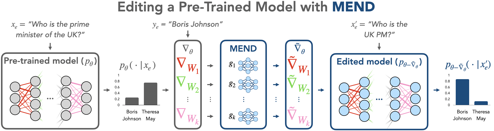
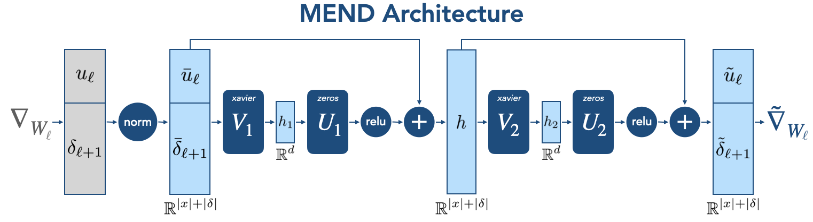
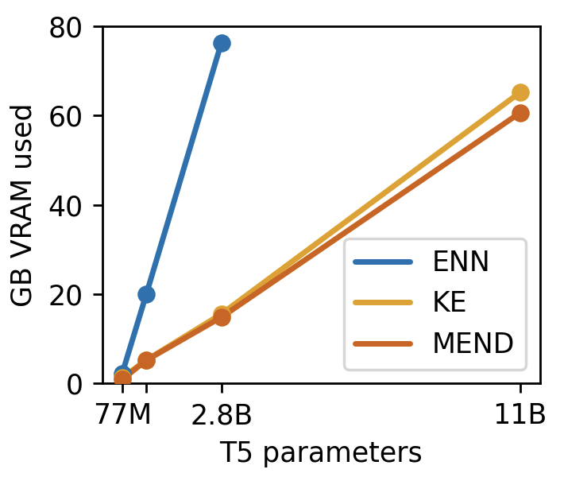
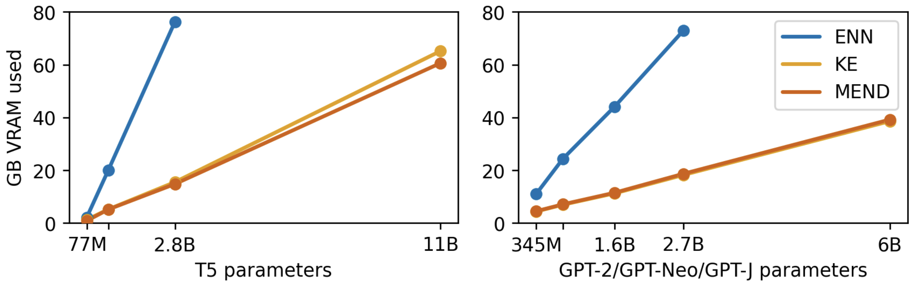

Fast Model Editing at Scale
Abstract摘要
While large pre-trained models have enabled impressive results on a variety of downstream tasks, the largest existing models still make errors, and even accurate predictions may become outdated over time. Because detecting all such failures at training time is impossible, enabling both developers and end users of such models to correct inaccurate outputs while leaving the model otherwise intact is desirable. However, the distributed, black-box nature of the representations learned by large neural networks makes producing such targeted edits difficult. If presented with only a single problematic input and new desired output, fine-tuning approaches tend to overfit; other editing algorithms are either computationally infeasible or simply ineffective when applied to very large models. To enable easy post-hoc editing at scale, we propose Model Editor Networks with Gradient Decomposition (MEND), a collection of small auxiliary editing networks that use a single desired input-output pair to make fast, local edits to a pre-trained model’s behavior. MEND learns to transform the gradient obtained by standard fine-tuning, using a low-rank decomposition of the gradient to make the parameterization of this transformation tractable. MEND can be trained on a single GPU in less than a day even for 10 billion+ parameter models; once trained MEND enables rapid application of new edits to the pre-trained model. Our experiments with T5, GPT, BERT, and BART models show that MEND is the only approach to model editing that effectively edits the behavior of models with more than 10 billion parameters. Code and data available at https://sites.google.com/view/mend-editing.
尽管大规模预训练模型已在多种下游任务上取得了令人瞩目的成果，但现有规模最大的模型仍会出错，即使是准确的预测，也可能随着时间推移而过时。由于不可能在训练时检测出所有此类失误，因此，理想的做法是使这类模型的开发者和最终用户都能够纠正不准确的输出，同时保持模型的其他部分不变。然而，大型神经网络所学表征具有分布式、黑盒式的特性，这使得此类定向编辑难以实现。如果仅提供一个存在问题的输入及其期望的新输出，微调方法往往会过拟合；其他编辑算法在应用于超大规模模型时，要么在计算上不可行，要么根本无效。为了便于大规模模型的事后编辑，我们提出了 Model Editor Networks with Gradient Decomposition (MEND)，它由一组小型辅助编辑网络构成，仅需一个期望的输入–输出对，即可快速、局部地编辑预训练模型的行为。MEND 学习对标准微调得到的梯度进行变换，并利用梯度的低秩分解，使这一变换的参数化在计算上可行。即使对于参数量达 10 billion+ 的模型，MEND 也能在单张 GPU 上用不到一天的时间完成训练；训练完成后，MEND 能够将新的编辑快速应用于预训练模型。我们在 T5、GPT、BERT 和 BART 模型上的实验表明，MEND 是唯一能够有效编辑参数量超过 10 billion 的模型行为的模型编辑方法。代码和数据可在 https://sites.google.com/view/mend-editing 获取。
1 Introduction1 引言

Figure 1: The proposed algorithm MEND enables editability by training a collection of MLPs to modify model gradients to produce local model edits that do not damage model performance on unrelated inputs. MEND is efficient to train and apply edits, even for very large models, as shown in Section 5.1.
图 1：所提出的算法 MEND 通过训练一组 MLP 来修改模型梯度，从而实现模型的可编辑性，产生局部的模型编辑，且不会损害模型在无关输入上的性能。如第 5.1 节所示，即使对于超大规模模型，MEND 的训练和编辑应用也很高效。
Increasingly large models have improved performance on a variety of modern computer vision (Huang et al., 2017; Chen et al., 2022) and especially natural language processing (Vaswani et al., 2017; Brown et al., 2020) problems. However, a key challenge in deploying and maintaining such models is issuing patches to adjust model behavior after deployment (Sinitsin et al., 2020). When a neural network produces an undesirable output, making a localized update to correct its behavior for a single input or small number of inputs is non-trivial, owing to the distributed nature of the model’s representations. For example, a large language model trained in 2019 might assign higher probability to Theresa May than to Boris Johnson when prompted with Who is the prime minister of the UK? (see Table 2 for an example with a real large language model; see Lazaridou et al. (2021) for a systematic study of failures of temporal generalization in LMs). An ideal model editing procedure could quickly update the model parameters to increase the relative likelihood of Boris Johnson without changing the model output for unrelated inputs. This procedure would produce edits with reliability, successfully changing the model’s output on the problematic input (e.g., Who is the prime minister of the UK?); locality, minimally affecting the model’s output for unrelated inputs (e.g., What sports team does Messi play for?); and generality, generating the correct output for inputs related to the edit input (e.g., Who is the UK PM?).
规模不断增大的模型提升了多种现代计算机视觉 (Huang et al., 2017; Chen et al., 2022) 问题，尤其是自然语言处理 (Vaswani et al., 2017; Brown et al., 2020) 问题上的性能。然而，部署和维护此类模型面临的一项关键挑战，是在部署后发布补丁以调整模型行为 (Sinitsin et al., 2020)。当神经网络产生不符合预期的输出时，由于模型表征的分布式特性，通过局部更新来纠正其在单个或少量输入上的行为并非易事。例如，对于提示“英国首相是谁？”，一个在 2019 年训练的大语言模型可能赋予 Theresa May 比 Boris Johnson 更高的概率（真实大语言模型的示例见表 2；关于语言模型时间泛化失效的系统研究，见 Lazaridou et al. (2021)）。理想的模型编辑过程能够快速更新模型参数，提高 Boris Johnson 的相对似然，同时不改变模型对无关输入的输出。这一过程产生的编辑应具有可靠性，即成功改变模型在问题输入（例如，“英国首相是谁？”）上的输出；局部性，即尽可能少地影响模型对无关输入（例如，“Messi 效力于哪支运动队？”）的输出；以及泛化性，即对与编辑输入相关的输入（例如，“谁是英国的首相？”）生成正确输出。
A simple approach to making such edits is additional fine-tuning with a new label on the single example to be corrected. Yet fine-tuning on a single example tends to overfit, even when constraining the distance between the pre- and post-fine-tuning parameters (Zhu et al., 2020; De Cao et al., 2021). This overfitting leads to failures of both locality and generality. While fine-tuning on the edit example along with continued training on the training set better enforces locality, our experiments show that it still lacks generality. Further, it requires persistent access to the full training set during test time and is more computationally demanding. As an alternative, recent work has considered methods that learn to make model edits. Sinitsin et al. (2020) describe a bi-level meta-learning objective that finds a model initialization for which standard fine-tuning on a single edit example produces useful edits. While effective, the computational requirements of learning such an editable representation make scaling to very large models, where fast, effective edits are most needed, difficult (see Figure 6). De Cao et al. (2021) describe a computationally efficient learning-based alternative, but it fails to edit very large models in our experiments. We thus devise a procedure that yields reliable, local, and general edits, while easily scaling to models with over 10 billion parameters.
实现此类编辑的一种简单方法，是为待纠正的单个样本赋予新标签，并据此进行额外微调。然而，在单个样本上进行微调往往会导致过拟合，即使对微调前后参数之间的距离施加约束也是如此 (Zhu et al., 2020; De Cao et al., 2021)。这种过拟合会导致局部性和泛化性均无法得到保证。虽然在针对编辑样本进行微调的同时继续在训练集上训练，能够更好地保证局部性，但我们的实验表明，这种方法仍然缺乏泛化性。此外，它要求在测试时持续访问完整训练集，且计算开销更大。作为替代方案，近期研究考虑了学习如何进行模型编辑的方法。Sinitsin et al. (2020) 描述了一种双层元学习目标，用于寻找一种模型初始化，使得在单个编辑样本上进行标准微调即可产生有效的编辑。尽管这种方法有效，但学习此类可编辑表征所需的计算资源，使其难以扩展到最需要快速、有效编辑的超大规模模型（见图 6）。De Cao et al. (2021) 描述了一种计算高效的基于学习的替代方法，但在我们的实验中，该方法无法编辑超大规模模型。因此，我们设计了一种既能产生可靠、局部且具有泛化性的编辑，又能轻松扩展到参数量超过 10 billion 的模型的过程。
Our approach trains lightweight model editor networks to produce edits to a pre-trained model’s weights when provided with the standard fine-tuning gradient of a given correction as input, leveraging the gradient as an information-rich starting point for editing (see Figure 1). Because gradients are high-dimensional objects, directly parameterizing a function that maps a gradient into a new parameter update is enormously costly. Even for a single $d\times d$ weight matrix, a naive implementation requires a mapping from $\mathbb{R}^{\mathcal{O}(d^{2})}\rightarrow\mathbb{R}^{\mathcal{O}(d^{2})}$, which is impractical for large models where $d\approx 10^{4}$. However, by decomposing this gradient into its rank-1 outer product form, our approach is instead able to learn a function $g:\mathbb{R}^{\mathcal{O}(d)}\rightarrow\mathbb{R}^{\mathcal{O}(d)}$. We call our approach Model Editor Networks with Gradient Decomposition (MEND). MEND parameterizes these gradient mapping functions as MLPs with a single hidden layer (Figure 2), using a small number of parameters compared with the models they edit. MEND can be applied to any pre-trained model, regardless of pre-training.
我们的方法训练轻量级模型编辑器网络，将给定修正的标准微调梯度作为输入，生成对预训练模型权重的编辑，利用梯度所包含的丰富信息作为编辑的起点（见图 1）。由于梯度是高维对象，直接对将梯度映射为新参数更新的函数进行参数化，成本极其高昂。即使对于单个 $d\times d$ 权重矩阵，朴素实现也需要一个从 $\mathbb{R}^{\mathcal{O}(d^{2})}\rightarrow\mathbb{R}^{\mathcal{O}(d^{2})}$ 的映射，这对于 $d\approx 10^{4}$ 的大型模型而言并不实际。然而，通过将该梯度分解为秩为 1 的外积形式，我们的方法能够转而学习一个函数 $g:\mathbb{R}^{\mathcal{O}(d)}\rightarrow\mathbb{R}^{\mathcal{O}(d)}$。我们将该方法称为采用梯度分解的模型编辑器网络（Model Editor Networks with Gradient Decomposition，MEND）。MEND 使用单隐藏层 MLP 对这些梯度映射函数进行参数化（图 2），其参数量相对于所编辑的模型而言很小。MEND 可应用于任何预训练模型，无论其预训练方式如何。
The primary contribution of this work is a scalable algorithm for fast model editing that can edit very large pre-trained language models by leveraging the low-rank structure of fine-tuning gradients. We perform empirical evaluations on a variety of language-related tasks and transformer models, showing that MEND is the only algorithm that can consistently edit the largest GPT-style (Radford et al., 2019; Black et al., 2021; Wang and Komatsuzaki, 2021) and T5 (Raffel et al., 2020) language models. Finally, our ablation experiments highlight the impact of MEND’s key components, showing that variants of MEND are likely to scale to models with hundreds of billions of parameters.
本工作的主要贡献是提出了一种可扩展的快速模型编辑算法，该算法利用微调梯度的低秩结构，能够编辑规模极大的预训练语言模型。我们在多种语言相关任务和 Transformer 模型上进行了实证评估，结果表明，MEND 是唯一能够稳定地编辑最大规模的 GPT 风格（Radford et al., 2019; Black et al., 2021; Wang and Komatsuzaki, 2021）和 T5（Raffel et al., 2020）语言模型的算法。最后，我们的消融实验突出了 MEND 关键组件的作用，表明 MEND 的变体很可能能够扩展至具有数千亿参数的模型。
2 The Model Editing Problem2 模型编辑问题
The goal of model editing is to enable the use of a single pair of input $x_{\text{e}}$ and desired output $y_{\text{e}}$ to alter a base model’s output for $x_{\text{e}}$ as well as its equivalence neighborhood (related input/output pairs), all while leaving model behavior on unrelated inputs unchanged (Sinitsin et al., 2020; De Cao et al., 2021). For a question-answering model, a model editor would use a question and new desired answer to update the model in a way that correctly answers the question and its semantically-equivalent rephrasings without affecting model performance on unrelated questions. Some model editors, including ours, use a training phase before they can apply edits (Sinitsin et al., 2020; De Cao et al., 2021), using an edit training dataset $D^{tr}_{edit}$ that specifies the types of edits that will be made.
模型编辑的目标是，仅使用由输入 $x_{\text{e}}$ 和期望输出 $y_{\text{e}}$ 组成的单个样本对，就能改变基础模型对 $x_{\text{e}}$ 及其等价邻域（相关的输入/输出对）的输出，同时保持模型在无关输入上的行为不变（Sinitsin et al., 2020; De Cao et al., 2021）。对于问答模型，模型编辑器会使用一个问题及其新的期望答案来更新模型，使其能够正确回答该问题及其语义等价的改写，同时不影响模型在无关问题上的性能。包括我们的方法在内，一些模型编辑器在执行编辑之前需要经历训练阶段（Sinitsin et al., 2020; De Cao et al., 2021），使用编辑训练数据集 $D^{tr}_{edit}$ 来指定将要执行的编辑类型。
More precisely, the base model $f_{\theta}:\mathcal{X}\times\Theta\rightarrow\mathcal{Y}$ is a differentiable function that maps an input $x$ and set of parameters $\theta$ to an output $y$. A model editor is a function $E:\mathcal{X}\times\mathcal{Y}\times\mathcal{L}\times\Theta\times\Phi\rightarrow\Theta$ that maps an edit input $x_{\text{e}}$, edit label $y_{\text{e}}$ (a class label or sequence of tokens), loss function $l_{e}:\mathcal{X}\times\mathcal{Y}\times\Theta\rightarrow\mathbb{R}$, base model parameters $\theta$, and optional editor parameters $\phi$ to a new set of model parameters $\theta_{e}$. We use the loss function $l_{e}(x,y,\theta)=-\log p_{\theta}(y|x)$, based on past work (De Cao et al., 2021), but other choices are possible. Model editors are evaluated on a held-out dataset $D^{te}_{edit}=\{(x_{\text{e}},y_{\text{e}},x_{\text{loc}},x_{\text{e}}^{\prime},y_{\text{e}}^{\prime})_{i}\}$. For algorithms that learn model editor parameters $\phi$, a dataset $D^{tr}_{edit}$ containing tuples similar to $D^{te}_{edit}$ is used, typically much smaller than the pre-trained model’s original training set. The locality input $x_{\text{loc}}$ is simply a randomly sampled input that is used to quantify the extent to which model predictions change for unrelated inputs. The alternative edit input and label $x_{\text{e}}^{\prime}$ and $y_{\text{e}}^{\prime}$ are sampled from the equivalence neighborhood $N(x_{\text{e}},y_{\text{e}})$ of $x_{\text{e}}$ and $y_{\text{e}}$, the set of examples that the edited model should generalize to after performing an edit with $x_{\text{e}},y_{\text{e}}$. For $x_{\text{e}},y_{\text{e}}$ = Who is the prime minister of the UK? Boris Johnson, $N(x_{\text{e}},y_{\text{e}})$ might contain $x_{\text{e}}^{\prime},y_{\text{e}}^{\prime}$ = Who is the UK PM? Boris Johnson, among others. $x_{\text{loc}}$ might be What team does Messi play for?.
更准确地说，基础模型 $f_{\theta}:\mathcal{X}\times\Theta\rightarrow\mathcal{Y}$ 是一个可微函数，将输入 $x$ 和参数集 $\theta$ 映射为输出 $y$。模型编辑器是一个函数 $E:\mathcal{X}\times\mathcal{Y}\times\mathcal{L}\times\Theta\times\Phi\rightarrow\Theta$，将编辑输入 $x_{\text{e}}$、编辑标签 $y_{\text{e}}$（类别标签或词元序列）、损失函数 $l_{e}:\mathcal{X}\times\mathcal{Y}\times\Theta\rightarrow\mathbb{R}$、基础模型参数 $\theta$ 以及可选的编辑器参数 $\phi$ 映射为一组新的模型参数 $\theta_{e}$。我们沿用以往工作（De Cao et al., 2021），采用损失函数 $l_{e}(x,y,\theta)=-\log p_{\theta}(y|x)$，但也可以采用其他选择。模型编辑器在留出数据集 $D^{te}_{edit}=\{(x_{\text{e}},y_{\text{e}},x_{\text{loc}},x_{\text{e}}^{\prime},y_{\text{e}}^{\prime})_{i}\}$ 上进行评估。对于需要学习模型编辑器参数 $\phi$ 的算法，使用的数据集 $D^{tr}_{edit}$ 包含与 $D^{te}_{edit}$ 类似的元组，其规模通常远小于预训练模型的原始训练集。局部性输入 $x_{\text{loc}}$ 只是一个随机采样的输入，用于量化模型对无关输入的预测发生变化的程度。替代编辑输入和标签 $x_{\text{e}}^{\prime}$ 与 $y_{\text{e}}^{\prime}$ 从 $x_{\text{e}}$ 和 $y_{\text{e}}$ 的等价邻域 $N(x_{\text{e}},y_{\text{e}})$ 中采样，该邻域是模型使用 $x_{\text{e}},y_{\text{e}}$ 完成编辑后应能泛化到的样本集合。对于 $x_{\text{e}},y_{\text{e}}$ = 英国首相是谁？鲍里斯·约翰逊，$N(x_{\text{e}},y_{\text{e}})$ 中可能包含 $x_{\text{e}}^{\prime},y_{\text{e}}^{\prime}$ = 谁是英国的首相？鲍里斯·约翰逊，以及其他样本。$x_{\text{loc}}$ 可能是梅西效力于哪支球队？
In this work, we call a model editor reliable if the post-edit model predicts the edit label $y_{\text{e}}$ for the edit input $x_{\text{e}}$. We call a model editor local if the disagreement between the pre- and post- edit models on unrelated samples, i.e., $\mathbb{E}_{x_{\text{loc}}\sim D^{te}_{edit}}\text{KL}(p_{\theta}(\cdot|x_{\text{loc}})\|p_{\theta_{e}}(\cdot|x_{\text{loc}}))$, is small. Finally, we say a model editor generalizes if the post-edit model predicts the label $y_{\text{e}}^{\prime}$ when conditioned on $x_{\text{e}}^{\prime}$, for $(x_{\text{e}}^{\prime},y_{\text{e}}^{\prime})\in N(x_{\text{e}},y_{\text{e}})$. We call a model editor efficient if the time and memory requirements for computing $\phi$ and evaluating $E$ are small. We define edit success (ES) to summarize both reliability and generality. It is measured as the average accuracy of the edited model $p_{\theta_{e}}$ on the edit input as well as inputs drawn uniformly from the equivalence neighborhood:
在本研究中，如果编辑后的模型对编辑输入 $x_{\text{e}}$ 预测出编辑标签 $y_{\text{e}}$，我们就称模型编辑器具有可靠性。如果编辑前后的模型在无关样本上的差异，即 $\mathbb{E}_{x_{\text{loc}}\sim D^{te}_{edit}}\text{KL}(p_{\theta}(\cdot|x_{\text{loc}})\|p_{\theta_{e}}(\cdot|x_{\text{loc}}))$，较小，我们就称模型编辑器具有局部性。最后，对于 $(x_{\text{e}}^{\prime},y_{\text{e}}^{\prime})\in N(x_{\text{e}},y_{\text{e}})$，如果编辑后的模型在以 $x_{\text{e}}^{\prime}$ 为条件时预测出标签 $y_{\text{e}}^{\prime}$，我们就称模型编辑器具有泛化性。如果计算 $\phi$ 和求值 $E$ 所需的时间和内存较少，我们就称模型编辑器具有高效性。我们定义编辑成功率（ES）来综合衡量可靠性与泛化性。其度量方式为编辑后的模型 $p_{\theta_{e}}$ 在编辑输入以及从等价邻域中均匀抽取的输入上的平均准确率：
3 Model Editor Networks with Gradient Decomposition3 基于梯度分解的模型编辑器网络
Broadly, MEND is a method for learning to transform the raw fine-tuning gradient into a more targeted parameter update that successfully edits a model in a single step. MEND uses $f_{\theta}$ and an edit training set $D^{tr}_{edit}$ to produce a collection of model editor networks $g_{\ell}$, which edit the model’s weights given new edit pairs $(x_{\text{e}},y_{\text{e}})$ at test time. Each $g_{\ell}$ transforms the fine-tuning gradient for a particular layer $\ell$ into a parameter update for the layer that provides the reliability, locality, generality, and efficiency properties described earlier. Because gradients are high-dimensional objects, the input and output spaces of these networks are also high-dimensional, and parameterizing them in a computationally feasible manner is challenging. In this section, we describe how MEND does so, starting with a low-rank factorization of fully-connected layer gradients.
总体而言，MEND 是一种学习将原始微调梯度转换为更具针对性的参数更新的方法，从而在单步内成功编辑模型。MEND 利用 $f_{\theta}$ 和编辑训练集 $D^{tr}_{edit}$ 生成一组模型编辑器网络 $g_{\ell}$，这些网络在测试时根据新的编辑对 $(x_{\text{e}},y_{\text{e}})$ 编辑模型权重。每个 $g_{\ell}$ 将特定层 $\ell$ 的微调梯度转换为该层的参数更新，使其具备前文所述的可靠性、局部性、泛化性和高效性。由于梯度是高维对象，这些网络的输入和输出空间也都是高维的，因此，以计算上可行的方式对其进行参数化具有挑战性。本节从全连接层梯度的低秩分解入手，介绍 MEND 如何实现这一点。
3.1 A parameter-efficient transformation of high-dimensional gradients3.1 高维梯度的参数高效变换

Figure 2: The MEND architecture, consisting of two consecutive blocks, both initialized to compute the exact identity function. Left. The input to a MEND network is $\{\delta_{\ell+1},u_{\ell}\}$, the components of the rank-1 gradient. Right. A MEND network produces a new rank-1 update $\tilde{\nabla}_{W_{\ell}}$, which is added to weights $W_{\ell}$ to edit the model.
图 2：MEND 架构，由两个连续的模块组成，二者均初始化为精确计算恒等函数。左：MEND 网络的输入为 $\{\delta_{\ell+1},u_{\ell}\}$，即秩为 1 的梯度的组成部分。右：MEND 网络生成一个新的秩为 1 的更新 $\tilde{\nabla}_{W_{\ell}}$，将其加到权重 $W_{\ell}$ 上以编辑模型。
The input to a MEND network $g_{\ell}$ is the fine-tuning gradient $\nabla_{W_{\ell}}l_{e}(x_{\text{e}},y_{\text{e}},\theta)$ at layer $\ell$ and the output is the layer’s parameter edit, which we call $\tilde{\nabla}_{W_{\ell}}$. As noted earlier, for a $d\times d$ weight matrix, this function has $d^{2}$ inputs and outputs. Even if $g_{\ell}$ is a linear network with no hidden layers and produces only a rank-1 parameter edit (motivated by the effectiveness of low-rank model edits observed by Hu et al. (2021)), this function would still require $d^{2}(d+d)=2d^{3}$ parameters. For a low-rank linear parameterization of $g_{\ell}$ with rank $r$, we have $r(d^{2}+2d)$ parameters, which still carries an unacceptable cost for non-trivial $r$, considering that $d\approx 10^{4}$ for some models (Raffel et al., 2020).
MEND 网络 $g_{\ell}$ 的输入是层 $\ell$ 的微调梯度 $\nabla_{W_{\ell}}l_{e}(x_{\text{e}},y_{\text{e}},\theta)$，输出是该层的参数编辑量，我们将其记为 $\tilde{\nabla}_{W_{\ell}}$。如前所述，对于一个 $d\times d$ 的权重矩阵，该函数的输入和输出维度均为 $d^{2}$。即使 $g_{\ell}$ 是一个没有隐藏层的线性网络，并且仅生成秩为 1 的参数编辑量（其动机源于 Hu et al. (2021) 观察到的低秩模型编辑的有效性），该函数仍需要 $d^{2}(d+d)=2d^{3}$ 个参数。对于 $g_{\ell}$ 的秩为 $r$ 的低秩线性参数化，参数数量为 $r(d^{2}+2d)$；考虑到某些模型中 $d\approx 10^{4}$ (Raffel et al., 2020)，当 $r$ 并非很小时，这仍会带来不可接受的开销。
MEND solves this problem using the fact that the input to $g_{\ell}$, the fine-tuning gradient, is a rank-1 matrix: the gradient of loss $L$ with respect to weights $W_{\ell}$ in layer $\ell$ of an MLP is a rank-1 matrix for each of $B$ batch elements $\nabla_{W_{\ell}}L=\sum_{i=1}^{B}\delta_{\ell+1}^{i}{u_{\ell}^{i\,\top}}$, where $\delta_{\ell+1}^{i}$ is the gradient of the loss for batch element $i$ with respect to the preactivations at layer $\ell+1$, and $u_{\ell}^{i}$ are the inputs to layer $\ell$ for batch element $i$ (see Appendix D). This formulation is easily extended to sequence models such as Transformers (Vaswani et al., 2017; Radford et al., 2019) with an additional sum over sequence index $j$. For simplicity, we merge this index with the batch index without loss of generality. This decomposition enables a network to condition directly on the gradient of a single example with only $2d$ (rather than $d^{2}$) input neurons. With this parameterization, MEND learns functions $g_{\ell}$, with parameters $\phi_{\ell}$, which map $u_{\ell}^{i}$ and $\delta_{\ell+1}^{i}$ to pseudoactivations $\tilde{u}_{\ell}^{i}$ and pseudodelta $\tilde{\delta}_{\ell+1}^{i}$. The model edit for weight matrix $W_{\ell}$ is then
MEND 利用 $g_{\ell}$ 的输入，即微调梯度，是秩为 1 的矩阵这一事实来解决此问题：对于批次中的 $B$ 个元素中的每一个，MLP 的层 $\ell$ 中损失 $L$ 关于权重 $W_{\ell}$ 的梯度均为秩为 1 的矩阵，$\nabla_{W_{\ell}}L=\sum_{i=1}^{B}\delta_{\ell+1}^{i}{u_{\ell}^{i\,\top}}$，其中，$\delta_{\ell+1}^{i}$ 是批次元素 $i$ 的损失关于层 $\ell+1$ 的激活前值的梯度，$u_{\ell}^{i}$ 是批次元素 $i$ 对应的层 $\ell$ 的输入（见附录 D）。通过额外对序列索引 $j$ 求和，这一形式很容易扩展到 Transformers 等序列模型 (Vaswani et al., 2017; Radford et al., 2019)。为简便起见，我们将该索引与批次索引合并，且不失一般性。通过这种分解，网络仅需 $2d$ 个（而非 $d^{2}$ 个）输入神经元，就能直接以单个样本的梯度为条件。在这种参数化方式下，MEND 学习参数为 $\phi_{\ell}$ 的函数 $g_{\ell}$，将 $u_{\ell}^{i}$ 和 $\delta_{\ell+1}^{i}$ 映射为伪激活 $\tilde{u}_{\ell}^{i}$ 和伪 delta $\tilde{\delta}_{\ell+1}^{i}$。于是，权重矩阵 $W_{\ell}$ 的模型编辑量为
To further reduce the number of additional parameters, MEND shares parameters across editor networks $g_{\ell}$ (note Figure 2 omits this for clarity). Because the sizes of $u_{\ell}$ and $\delta_{\ell+1}$ depend on the shape of the weight matrix $W_{\ell}$, MEND learns a separate set of editor parameters for each unique shape of weight matrix to be edited. Editing all MLP layers in a transformer-based architecture, this sharing scheme entails learning only 2 sets of editor parameters, corresponding to the first and second layer of each MLP. To enable some layer-wise specialization, MEND applies a layer-specific scale $s_{\ell}$ and offset $o_{\ell}$ to the editor network hidden state and output, similar to FiLM layers (Perez et al., 2018). Putting everything together, a MEND network computes $g_{\ell}(z_{\ell})$ where $z_{\ell}=\text{concat}(u_{\ell},\delta_{\ell+1})$ as
为进一步减少额外参数的数量，MEND 在编辑器网络 $g_{\ell}$ 之间共享参数（注意，为清晰起见，图 2 中省略了这一点）。由于 $u_{\ell}$ 和 $\delta_{\ell+1}$ 的大小取决于权重矩阵 $W_{\ell}$ 的形状，MEND 为待编辑权重矩阵的每一种不同形状分别学习一组编辑器参数。在编辑基于 Transformer 的架构中的所有 MLP 层时，这种共享方案只需学习 2 组编辑器参数，分别对应于每个 MLP 的第一层和第二层。为使各层具有一定的特化能力，MEND 对编辑器网络的隐藏状态和输出施加层特定的缩放 $s_{\ell}$ 和偏移 $o_{\ell}$，类似于 FiLM 层 (Perez et al., 2018)。综合上述设计，MEND 网络按如下方式计算 $g_{\ell}(z_{\ell})$，其中 $z_{\ell}=\text{concat}(u_{\ell},\delta_{\ell+1})$：
where $\sigma$ is a non-linear activation function s.t. $\sigma(0)=0$ (ReLU in this work) and $U_{j},V_{j}$ correspond to a low rank factorization of MEND’s weights at layer $j$ (keeping MEND’s total parameters $O(d)$).
其中，$\sigma$ 是满足 $\sigma(0)=0$ 的非线性激活函数（本文使用 ReLU），$U_{j},V_{j}$ 对应于 MEND 在第 $j$ 层的权重的低秩分解（使 MEND 的总参数量保持为 $O(d)$）。
To summarize, MEND parameterizes $g_{\ell}$ as an MLP with low-rank weight matrices, residual connections, and a single hidden layer (see Figure 2). To edit layer $\ell$, layer activations $u_{\ell}^{i}$ and output gradients $\delta_{\ell+1}^{i}$ are concatenated and passed together to $g_{\ell}$, producing a vector of equal size, which is split into pseudoactivations $\tilde{u}_{\ell}^{i}$ and pseudodeltas $\tilde{\delta}_{\ell+1}^{i}$, ultimately producing $\tilde{\nabla}_{W_{\ell}}$ (Eq. 2). The final edited weights are $\tilde{W}=W_{\ell}-\alpha\tilde{\nabla}_{W_{\ell}}$, where $\alpha_{\ell}$ is a learned per-layer (scalar) step size.
综上所述，MEND 将 $g_{\ell}$ 参数化为一个具有低秩权重矩阵、残差连接和单个隐藏层的 MLP（见图 2）。为编辑第 $\ell$ 层，将层激活 $u_{\ell}^{i}$ 与输出梯度 $\delta_{\ell+1}^{i}$ 拼接后一并传入 $g_{\ell}$，生成一个大小相同的向量，再将其拆分为伪激活 $\tilde{u}_{\ell}^{i}$ 和伪 delta $\tilde{\delta}_{\ell+1}^{i}$，最终得到 $\tilde{\nabla}_{W_{\ell}}$（式 2）。最终编辑后的权重为 $\tilde{W}=W_{\ell}-\alpha\tilde{\nabla}_{W_{\ell}}$，其中 $\alpha_{\ell}$ 是为每一层学习的（标量）步长。
3.2 Training MEND3.2 训练 MEND
Algorithm 1 MEND Training
算法 1 MEND 训练
1:
Input: Pre-trained pθ𝒲p_{\theta_{\mathcal{W}}}, weights to make editable 𝒲\mathcal{W}, editor params ϕ0\phi_{0}, edit dataset DedittrD^{tr}_{edit}, edit-locality tradeoff ceditc_{\text{edit}}
2:
for t∈1,2,…t\in 1,2,... do
3:
Sample xe,ye,xe′,ye′,xloc∼Dedittrx_{\text{e}},y_{\text{e}},x_{\text{e}}^{\prime},y_{\text{e}}^{\prime},x_{\text{loc}}\sim D^{tr}_{edit}
4:
𝒲~←Edit(θ𝒲,𝒲,ϕt−1,xe,ye)\mathcal{\tilde{W}}\leftarrow\textsc{Edit}(\theta_{\mathcal{W}},\mathcal{W},\phi_{t-1},x_{\text{e}},y_{\text{e}})
5:
Le←−logpθ𝒲~(ye′|xe′)L_{\text{e}}\leftarrow-\log p_{\theta_{\mathcal{\tilde{W}}}}(y_{\text{e}}^{\prime}|x_{\text{e}}^{\prime})
6:
Lloc←KL(pθ𝒲(⋅|xloc)∥pθ𝒲~(⋅|xloc))L_{\text{loc}}\leftarrow\text{KL}(p_{\theta_{\mathcal{W}}}(\cdot|x_{\text{loc}})\|p_{\theta_{\mathcal{\tilde{W}}}}(\cdot|x_{\text{loc}}))
7:
L(ϕt−1)←ceditLe+LlocL(\phi_{t-1})\leftarrow c_{\text{edit}}L_{\text{e}}+L_{\text{loc}}
8:
ϕt←Adam(ϕt−1,∇ϕL(ϕt−1))\phi_{t}\leftarrow\text{Adam}\left(\phi_{t-1},\nabla_{\phi}L(\phi_{t-1})\right)
1:
procedure Edit(θ,𝒲,ϕ,xe,ye\theta,\mathcal{W},\phi,x_{\text{e}},y_{\text{e}})
2:
p^←pθ𝒲(ye|xe)\hat{p}\leftarrow p_{\theta_{\mathcal{W}}}(y_{\text{e}}|x_{\text{e}}), caching input uℓu_{\ell} to Wℓ∈𝒲W_{\ell}\in\mathcal{W}
3:
L(θ,𝒲)←−logp^L(\theta,\mathcal{W})\leftarrow-\log\hat{p} ⊳\triangleright Compute NLL
4:
for Wℓ∈𝒲W_{\ell}\in\mathcal{W} do
5:
δℓ+1←∇Wℓuℓ+bℓle(xe,ye)\delta_{\ell+1}\leftarrow\nabla_{W_{\ell}u_{\ell}+b_{\ell}}l_{e}(x_{\text{e}},y_{\text{e}}) ⊳\triangleright Grad wrt output
6:
u~ℓ,δ~ℓ+1←gϕℓ(uℓ,δℓ+1)\tilde{u}_{\ell},\tilde{\delta}_{\ell+1}\leftarrow g_{\phi_{\ell}}(u_{\ell},\delta_{\ell+1}) ⊳\triangleright Pseudo-acts/deltas
7:
W~ℓ←Wℓ−δ~ℓ+1u~ℓ⊤\tilde{W}_{\ell}\leftarrow W_{\ell}-\tilde{\delta}_{\ell+1}\tilde{u}_{\ell}^{\top} ⊳\triangleright Layer ℓ\ell model edit
8:
𝒲~←{W~1,…,W~k}\mathcal{\tilde{W}}\leftarrow\{\tilde{W}_{1},...,\tilde{W}_{k}\}
9:
return 𝒲~\mathcal{\tilde{W}} ⊳\triangleright Return edited weightsMEND uses an editing training set $D^{tr}_{edit}$ to learn parameters $\phi_{\ell}$ for each of the MEND networks $g_{\ell}$. Before training, we select the weights of the model $\mathcal{W}=\{W_{1},...,W_{M}\}$ that we would like to make editable (e.g., the weight matrices in the last $M$ layers). At each step of training, we sample an edit example $(x_{\text{e}},y_{\text{e}})$, locality example $x_{\text{loc}}$, and equivalence examples $(x_{\text{e}}^{\prime},y_{\text{e}}^{\prime})$ from the edit train set $D^{tr}_{edit}$. Recall that $x_{\text{loc}}$ is sampled independently from the edit example, so that it is very likely that it is unrelated to the edit example. We use $(x_{\text{e}},y_{\text{e}})$ to compute the raw gradient $\nabla_{W_{\ell}}p_{\theta_{\mathcal{W}}}(y_{\text{e}}|x_{\text{e}})$ for each weight matrix $W_{\ell}\in\mathcal{W}$, using $\theta_{\mathcal{W}}$ to denote the model parameters with un-edited weights. We then compute the parameter update for each layer $\tilde{W}=W_{\ell}-\alpha_{\ell}\tilde{\nabla}_{W_{\ell}}$ ($\tilde{\nabla}_{W_{\ell}}$ from Eq. 2).
MEND 使用编辑训练集 $D^{tr}_{edit}$ 为每个 MEND 网络 $g_{\ell}$ 学习参数 $\phi_{\ell}$。训练前，我们选定希望能够编辑的模型权重 $\mathcal{W}=\{W_{1},...,W_{M}\}$（例如，最后 $M$ 层中的权重矩阵）。在训练的每一步，我们从编辑训练集 $D^{tr}_{edit}$ 中采样一个编辑样本 $(x_{\text{e}},y_{\text{e}})$、一个局部性样本 $x_{\text{loc}}$ 以及等价样本 $(x_{\text{e}}^{\prime},y_{\text{e}}^{\prime})$。回顾前文，$x_{\text{loc}}$ 的采样独立于编辑样本，因此它极有可能与编辑样本无关。我们使用 $(x_{\text{e}},y_{\text{e}})$ 计算每个权重矩阵 $W_{\ell}\in\mathcal{W}$ 的原始梯度 $\nabla_{W_{\ell}}p_{\theta_{\mathcal{W}}}(y_{\text{e}}|x_{\text{e}})$，其中用 $\theta_{\mathcal{W}}$ 表示权重未经编辑的模型参数。随后，我们计算每一层的参数更新 $\tilde{W}=W_{\ell}-\alpha_{\ell}\tilde{\nabla}_{W_{\ell}}$（$\tilde{\nabla}_{W_{\ell}}$ 由式 2 得到）。
We compute the training losses for MEND using the edited model parameters $\mathcal{\tilde{W}}$, which we backpropagate into the editing networks. Note that we do not compute any higher-order gradients, because we do not optimize the pre-edit model parameters. The training losses are $L_{\text{e}}$, which measures edit success and $L_{\text{loc}}$, which measures edit locality (the KL divergence between the pre-edit and post-edit model conditioned on the locality input $x_{\text{loc}}$), defined as follows (also Alg. 1 lines 5–7):
我们使用编辑后的模型参数 $\mathcal{\tilde{W}}$ 计算 MEND 的训练损失，并将其反向传播至编辑网络。注意，我们不计算任何高阶梯度，因为我们不对编辑前的模型参数进行优化。训练损失包括衡量编辑成功程度的 $L_{\text{e}}$ 和衡量编辑局部性的 $L_{\text{loc}}$（以局部性输入 $x_{\text{loc}}$ 为条件时，编辑前后模型之间的 KL 散度），定义如下（另见算法 1 第 5–7 行）：
Intuitively, $L_{\text{e}}$ is small if the model has successfully updated its output for the edit example’s equivalence neighborhood, while $L_{\text{loc}}$ is small if the edit did not affect the model’s behavior on unrelated inputs. The total training loss for a MEND network is computed as $L_{\text{MEND}}=c_{\text{e}}L_{\text{e}}(\theta_{\mathcal{\tilde{W}}})+L_{\text{loc}}(\theta_{\mathcal{W}},\theta_{\mathcal{\tilde{W}}})$. We optimize $L_{\text{MEND}}$ with respect to the MEND parameters at each time step using the Adam optimizer (Kingma and Ba, 2015), using $c_{\text{e}}=0.1$ for all experiments.
直观而言，如果模型已成功更新其在编辑样本的等价邻域内的输出，则 $L_{\text{e}}$ 较小；如果编辑未影响模型在无关输入上的行为，则 $L_{\text{loc}}$ 较小。MEND 网络的总训练损失计算为 $L_{\text{MEND}}=c_{\text{e}}L_{\text{e}}(\theta_{\mathcal{\tilde{W}}})+L_{\text{loc}}(\theta_{\mathcal{W}},\theta_{\mathcal{\tilde{W}}})$。我们在每个时间步使用 Adam 优化器 (Kingma and Ba, 2015)，针对 MEND 参数优化 $L_{\text{MEND}}$，所有实验均使用 $c_{\text{e}}=0.1$。
While MEND’s parameterization can tractably represent a mapping from gradients to model edits, training the editor presents its own challenges. Appendix A describes MEND’s identity initialization and input normalization, which our ablations in Section 5.4 show are important to effective edits.
尽管 MEND 的参数化方式能够以计算上可行的方式表示从梯度到模型编辑的映射，但编辑器的训练本身也面临挑战。附录 A 描述了 MEND 的恒等初始化和输入归一化，第 5.4 节中的消融实验表明，它们对实现有效编辑十分重要。
4 Related Work4 相关工作
Table 1: Conceptual comparisons of model editors; MEND provides a unique combination of useful attributes. Preserves model means the editor guarantees model predictions will not be altered before an edit is applied. Only $(x_{\text{e}},y_{\text{e}})$ means the editor applies an edit at test time using only the edit pair (not needing access to the training set at test time as well). Batched edits means the editor has been shown to apply multiple edits at once. Scales to 10B means our implementation of the editor could run on a model with over 10B parameters using our single-GPU environment (see Appendix C.3). Few steps means edits are applied with one or a small number of steps. FT refers to fine-tuning; FT+KL adds a KL-divergence penalty between the original and fine-tuned model.
表 1：模型编辑器的概念性比较；MEND 兼具多种实用特性。保留模型表示编辑器保证在应用编辑之前，模型的预测不会改变。仅需 $(x_{\text{e}},y_{\text{e}})$ 表示编辑器在测试时仅使用编辑样本对即可应用编辑（测试时无需同时访问训练集）。批量编辑表示该编辑器已被证明能够同时应用多项编辑。可扩展至 10B 表示我们实现的编辑器能够在单 GPU 环境下，对参数量超过 10B 的模型运行（见附录 C.3）。少量步骤表示只需一步或少量步骤即可应用编辑。FT 指微调；FT+KL 在原始模型与微调后的模型之间添加了 KL 散度惩罚项。
| Preserves model? 保留模型？ | Only $(x_{\text{e}},y_{\text{e}})$ ? 仅需 $(x_{\text{e}},y_{\text{e}})$？ | Batched edits? 批量编辑？ | Scales to 10B? 可扩展至 10B？ | Few steps? 少量步骤？ | |
| Editor 编辑器 | |||||
| FT | ✓ | ✓ | ✓ | ✓ | ✗ |
| FT+KL | ✓ | ✗ | ✓ | ✓ | ✗ |
| ENN | ✗ | ✓ | ✓ | ✗ | ✓ |
| KE | ✓ | ✓ | ? | ✓ | ✓ |
| MEND | ✓ | ✓ | ✓ | ✓ | ✓ |
Various strategies for model editing exist, including modifications of standard fine-tuning intended to enforce locality by reducing distance traveled in parameter space (Zhu et al., 2020) or even find the min-L2 norm parameter update that reliably edits the model’s output (Sotoudeh and Thakur, 2021). However, De Cao et al. (2021) observe that parameter-space constraints do not always translate to useful function-space constraints for neural networks. Our fine-tuning baselines thus use a KL-divergence constraint in function space, but, even with this modification, we find that fine-tuning generally doesn’t consistently provide edit generality. Other approaches to editing such as Editable Neural Networks (ENN; Sinitsin et al. (2020)) or KnowledgeEditor (KE; De Cao et al. (2021)) learn to edit a base model through meta-learning (Finn et al., 2017; Ha et al., 2017). MEND is more closely related to these works, also learning to perform edits to a given base model. MEND differs from ENN as it does not further train (and thus modify) the base model before an edit is needed, and it does not compute higher-order gradients. Because ENN modifies the pre-edit model, the training process retains a copy of the original model in order to enforce the constraint that the editable model agrees with the original pre-trained model’s predictions. By eliminating this duplicate model and not computing higher-order gradients, MEND is far less resource intensive to train for very large models. Figure 6 shows the significant difference in memory consumption of ENN compared with MEND and KE. MEND is most similar to KE, which also presents a first-order algorithm that does not modify the pre-edit model. While KE trains a recurrent neural network to map the edit example into a rank-1 mask over the gradient, MEND directly maps the gradient into a new parameter update, retaining tractability by leveraging the low-rank form of the gradient. Table 1 contains an overview of algorithmic tradeoffs. See Appendix B for extended discussion of related work.
现有模型编辑策略多种多样，包括对标准微调方法进行修改，旨在通过缩短参数空间中的移动距离来保证局部性 (Zhu et al., 2020)，甚至寻找能够可靠地编辑模型输出的最小 L2 范数参数更新 (Sotoudeh and Thakur, 2021)。然而，De Cao et al. (2021) 发现，对于神经网络，参数空间约束并不总能转化为有效的函数空间约束。因此，我们的微调基线在函数空间中采用了 KL 散度约束，但我们发现，即使进行了这一修改，微调通常仍无法稳定地保证编辑的泛化性。其他编辑方法，如 Editable Neural Networks (ENN; Sinitsin et al. (2020)) 或 KnowledgeEditor (KE; De Cao et al. (2021))，通过元学习来学习如何编辑基础模型 (Finn et al., 2017; Ha et al., 2017)。MEND 与这些工作的联系更为紧密，同样学习对给定基础模型执行编辑。MEND 与 ENN 的区别在于，它不会在需要编辑之前进一步训练（从而修改）基础模型，也不计算高阶梯度。由于 ENN 会修改编辑前的模型，训练过程需要保留原始模型的一个副本，以施加约束，使可编辑模型的预测与原始预训练模型的预测一致。通过去除这一模型副本并避免计算高阶梯度，MEND 在面向超大模型进行训练时所需的资源大幅减少。图 6 展示了 ENN 与 MEND 和 KE 在内存消耗方面的显著差异。MEND 与 KE 最为相似，后者同样提出了一种不修改编辑前模型的一阶算法。KE 训练循环神经网络，将编辑样本映射为作用于梯度的秩为 1 的掩码，而 MEND 则直接将梯度映射为新的参数更新，并利用梯度的低秩形式保持计算的可行性。表 1 概述了各算法的权衡。有关相关工作的进一步讨论，见附录 B。
Various methods for meta-learning also use gradient transforms to achieve better model updates for few-shot learning (Ravi and Larochelle, 2017; Li et al., 2017; Lee and Choi, 2018; Park and Oliva, 2019; Flennerhag et al., 2020). However, these approaches do not leverage the factorized gradient, limiting them to simpler transformations (typically linear) of the gradient and/or transformations that also often impact the function computed by the forward pass of the model. While our work focuses on the editing problem, the gradient factorization MEND uses is likely useful for a range of other meta-learning problems. Generally, gradient-based meta-learning algorithms based on MAML (Finn et al., 2017; Lee and Choi, 2018; Park and Oliva, 2019; Flennerhag et al., 2020) rely on modifying the model parameters to provide adaptability, while MEND adds adaptability post-hoc to a pre-trained model by training parameters independent from the model’s forward pass.
多种元学习方法也使用梯度变换，为小样本学习实现更好的模型更新 (Ravi and Larochelle, 2017; Li et al., 2017; Lee and Choi, 2018; Park and Oliva, 2019; Flennerhag et al., 2020)。然而，这些方法没有利用因子分解形式的梯度，因此只能对梯度进行较简单的变换（通常为线性变换），和/或采用往往也会影响模型前向传播所计算函数的变换。尽管我们的工作聚焦于编辑问题，MEND 所采用的梯度因子分解很可能也适用于一系列其他元学习问题。一般而言，基于 MAML 的梯度元学习算法 (Finn et al., 2017; Lee and Choi, 2018; Park and Oliva, 2019; Flennerhag et al., 2020) 依赖修改模型参数来赋予模型适应能力，而 MEND 则通过训练独立于模型前向传播的参数，在预训练完成后为模型增添适应能力。
In the NLP literature, many papers have investigated the locus of various types of knowledge in language models, using learned probe models or iterative search procedures to test for linguistic structures (Belinkov et al., 2017; Conneau et al., 2018; Hewitt and Manning, 2019) or facts about the world (Petroni et al., 2019; Jiang et al., 2020; Dai et al., 2021). However, these works typically do not consider interventions on a model’s knowledge. Exceptions are Dai et al. (2021) and Wang et al. (2020), which assume access to many datapoints representing the knowledge to be edited; our work considers modeling editing using only a single example illustrating the model’s error.
在 NLP 文献中，许多论文研究了各类知识在语言模型中的存储位置，使用训练得到的探针模型或迭代搜索过程来检测语言结构 (Belinkov et al., 2017; Conneau et al., 2018; Hewitt and Manning, 2019) 或有关世界的事实 (Petroni et al., 2019; Jiang et al., 2020; Dai et al., 2021)。然而，这些工作通常不考虑对模型知识进行干预。Dai et al. (2021) 和 Wang et al. (2020) 是其中的例外，它们假定能够访问大量表征待编辑知识的数据点；我们的工作则研究仅使用一个展示模型错误的样本来进行模型编辑。
5 Experiments5 实验
Table 2: Examples of using MEND to edit a T5-small model fine-tuned on Natural Questions by Roberts et al. (2020). Each example shows the output of the model before and after editing. Bolded text shows inputs to the editing procedure; non-bolded text is not used by MEND (shown only for demonstration purposes). In examples 1 and 2, we perform multiple edits in sequence with MEND; in ex. 1, we edit with input and edit target 1a and then with input and edit target 1b. Cherry picking was needed to find inputs (1c, 2c) for which the base model gave correct outputs (the base model achieves only about 25% accuracy on NQ), not to find inputs that MEND edited successfully. See Table 10 in the Appendix for additional examples and failure cases.
表 2：使用 MEND 编辑 Roberts et al. (2020) 在 Natural Questions 上微调的 T5-small 模型的示例。每个示例均展示了模型在编辑前后的输出。粗体文本表示编辑过程的输入；非粗体文本不被 MEND 使用（仅用于演示）。在示例 1 和 2 中，我们使用 MEND 依次执行多次编辑；在示例 1 中，我们先使用 1a 的输入和编辑目标进行编辑，再使用 1b 的输入和编辑目标进行编辑。我们需要精心挑选，才能找到基础模型能够给出正确输出的输入（1c、2c）（基础模型在 NQ 上的准确率仅约为 25%），而非为了找到 MEND 能够成功编辑的输入。更多示例和失败案例见附录中的表 10。
| Input 输入 | Pre-Edit Output 编辑前的输出 | Edit Target 编辑目标 | Post-Edit Output 编辑后的输出 | |
| 1a: | Who is India’s PM? 印度总理是谁？ | Satya Pal Malik ✗ | Narendra Modi | Narendra Modi ✓ |
| 1b: | Who is the prime minister of the UK? 英国首相是谁？ | Theresa May ✗ | Boris Johnson | Boris Johnson ✓ |
| 1c: | Who is the prime minister of India? 印度总理是谁？ | Narendra Modi ✓ | — | Narendra Modi ✓ |
| 1d: | Who is the UK PM? 英国首相是谁？ | Theresa May ✗ | — | Boris Johnson ✓ |
| 2a: | What is Messi’s club team? 梅西效力于哪家俱乐部？ | Barcelona B ✗ | PSG | PSG ✓ |
| 2b: | What basketball team does Lebron play on? 勒布朗效力于哪支篮球队？ | Dallas Mavericks ✗ | the LA Lakers | the LA Lakers ✓ |
| 2c: | Where in the US is Raleigh? 罗利位于美国的哪里？ | a state in the South ✓ 南部的一个州 ✓ | — | a state in the South ✓ 南部的一个州 ✓ |
| 3a: | Who is the president of Mexico? 墨西哥总统是谁？ | Enrique Pea Nieto ✗ | Andrés Manuel López Obrador | Andrés Manuel López Obrador ✓ |
| 3b: | Who is the vice president of Mexico? 墨西哥副总统是谁？ | Yadier Benjamin Ramos ✗ | — | Andrés Manuel López Obrador ✗ |
A key motivation for MEND is scalability to large models, which requires an algorithm to be efficient in terms of computation time and particularly memory consumption. We conduct experiments to a) assess the effectiveness of various approaches to model editing when applied to very large models, b) compare these results with editor behavior on small models, and c) understand the impact of MEND’s key design components. We evaluate model editors using several editing datasets and comparison algorithms, which we outline next.
MEND 的一个关键动机是实现对大型模型的可扩展性，这要求算法在计算时间、尤其是内存消耗方面具有较高效率。我们开展实验，以 a) 评估各种模型编辑方法应用于超大型模型时的有效性，b) 将这些结果与编辑器在小型模型上的表现进行比较，以及 c) 了解 MEND 关键设计组件的影响。我们使用多个编辑数据集和对比算法来评估模型编辑器，下面将对其进行概述。
Editing Datasets. All editing datasets pair each edit input $x_{\text{e}}$ (questions, text passages) with a plausible edit label $y_{\text{e}}$ that is intended to mimic the distribution of edit labels we would encounter in practice (changing a QA model’s answer or steering a generative model toward a particular continuation). For example, in a QA setting, plausible edit labels include the ground truth label as well as entities of the same type as the true answer. See Appendix C.4 Tables 7 and 8 for sample data. Specifically, for seq2seq models, we use the zsRE question-answering dataset (Levy et al., 2017) using question rephrasings generated by backtranslation as the equivalence neighborhood and train/val splits generated by De Cao et al. (2021). Each $x_{\text{e}}$ is a question about an entity, and plausible alternative edit labels $y_{\text{e}}$ are sampled from the top-ranked predictions of a BART-base model trained on zsRE question-answering. When editing models pre-trained on the zsRE question-answering problem, we sample $x_{\text{loc}}$ as independent questions from the edit train set. For other experiments (Section 5.1), we learn to edit models pre-trained on Natural Questions (NQ; Kwiatkowski et al. (2019)) rather than zsRE; we therefore sample $x_{\text{loc}}$ from NQ rather than zsRE to measure accuracy drawdown in these cases. For classification models (e.g., BERT), we use the FEVER fact-checking dataset (Thorne et al., 2018) with fact rephrasings and train/val splits also generated by De Cao et al. (2021). Each $x_{\text{e}}$ is a fact, and each $y_{\text{e}}$ is a random binary label sampled from a Bernoulli distribution with $p=0.5$. Locality examples $x_{\text{loc}}$ are randomly sampled facts distinct from the edit example. For GPT-style models, we create a Wikitext generation editing dataset of similar size to the zsRE and FEVER editing datasets, containing approximately 68k $x_{\text{e}},y_{\text{e}}$ pairs. Each $x_{\text{e}}$ is a passage sampled from Wikitext-103 and $y_{\text{e}}$ is a 10-token sample from a pre-trained distilGPT-2 model. $x_{\text{loc}}$ is chosen depending on the pre-trained model: for models pre-trained on Wikitext, $x_{\text{loc}}$ is sampled from Wikitext-103 (independently from $x_{\text{e}}$). For GPT-Neo/J, we sample $x_{\text{loc}}$ from OpenWebText (OWT; (Gokaslan and Cohen, 2019)) to better match the model’s original training data. The equivalence neighborhood in this setting is $N(x_{\text{e}},y_{\text{e}})=\{(x_{\text{e}}^{k},y_{\text{e}})\}$, where ${x_{\text{e}}^{k}}$ is formed by removing a prefix of up to $\frac{|x_{\text{e}}|}{2}$ tokens from the beginning of $x_{\text{e}}$, where $|x_{\text{e}}|$ is the length of $x_{\text{e}}$ in tokens.
编辑数据集。所有编辑数据集都将每个编辑输入 $x_{\text{e}}$（问题、文本段落）与一个合理的编辑标签 $y_{\text{e}}$ 配对，旨在模拟实际应用中可能遇到的编辑标签分布（更改问答模型的答案，或将生成模型转向特定的续写内容）。例如，在问答场景中，合理的编辑标签包括真实标签以及与正确答案类型相同的实体。示例数据见附录 C.4 的表 7 和表 8。具体而言，对于 seq2seq 模型，我们使用 zsRE 问答数据集 (Levy et al., 2017)，将通过回译生成的问题改写作为等价邻域，并采用 De Cao et al. (2021) 生成的训练集/验证集划分。每个 $x_{\text{e}}$ 都是一个关于实体的问题，而合理的替代编辑标签 $y_{\text{e}}$ 则从在 zsRE 问答任务上训练的 BART-base 模型排名靠前的预测结果中采样。编辑在 zsRE 问答任务上预训练的模型时，我们从编辑训练集中独立采样问题作为 $x_{\text{loc}}$。在其他实验（第 5.1 节）中，我们学习编辑在 Natural Questions (NQ; Kwiatkowski et al. (2019)) 上而非 zsRE 上预训练的模型；因此，在这些情况下，我们从 NQ 而非 zsRE 中采样 $x_{\text{loc}}$，以衡量准确率的下降幅度。对于分类模型（例如 BERT），我们使用 FEVER 事实核查数据集 (Thorne et al., 2018)，其中事实改写和训练集/验证集划分也由 De Cao et al. (2021) 生成。每个 $x_{\text{e}}$ 都是一条事实，而每个 $y_{\text{e}}$ 都是从 $p=0.5$ 的伯努利分布中采样得到的随机二元标签。局部性样本 $x_{\text{loc}}$ 是随机采样得到的、不同于编辑样本的事实。对于 GPT 风格的模型，我们构建了一个 Wikitext 生成编辑数据集，其规模与 zsRE 和 FEVER 编辑数据集相近，包含约 68k 个 $x_{\text{e}},y_{\text{e}}$ 对。每个 $x_{\text{e}}$ 都是从 Wikitext-103 中采样的文本段落，而 $y_{\text{e}}$ 则是从预训练的 distilGPT-2 模型中采样得到的、长度为 10 个 token 的样本。$x_{\text{loc}}$ 的选择取决于预训练模型：对于在 Wikitext 上预训练的模型，$x_{\text{loc}}$ 从 Wikitext-103 中采样（独立于 $x_{\text{e}}$）。对于 GPT-Neo/J，我们从 OpenWebText (OWT; (Gokaslan and Cohen, 2019)) 中采样 $x_{\text{loc}}$，以更好地匹配模型的原始训练数据。在这一设置下，等价邻域为 $N(x_{\text{e}},y_{\text{e}})=\{(x_{\text{e}}^{k},y_{\text{e}})\}$，其中，${x_{\text{e}}^{k}}$ 通过从 $x_{\text{e}}$ 的开头移除长度至多为 $\frac{|x_{\text{e}}|}{2}$ 个 token 的前缀构成，$|x_{\text{e}}|$ 表示 $x_{\text{e}}$ 以 token 数计的长度。
Table 3: Editing very large pre-trained models on our Wikitext generative editing problem and the zsRE question-answering editing problem used by De Cao et al. (2021). MEND consistently produces more effective edits (higher success, lower drawdown) than existing editors. ES is the edit success rate, while ppl. DD and acc. DD are the model drawdown in units of perplexity increase or accuracy decrease, respectively. Due to ENN’s memory requirements, we were unable to run the algorithm for models of this size. The low drawdown for all T5 models may occur because the T5 models (pre-trained on mask filling and finetuned for question-answering by Roberts et al. (2020)) might not be fully converged on the question-answering problem. Edits may therefore effectively serve as task specification, further fine-tuning the model on question-answering. FT refers to fine-tuning; FT+KL is fine-tuning with a KL-div. penalty between the original and fine-tuned model.
表 3：在我们的 Wikitext 生成式编辑问题和 De Cao et al. (2021) 使用的 zsRE 问答编辑问题上，对超大规模预训练模型进行编辑。与现有编辑器相比，MEND 始终能够实现更有效的编辑（更高的成功率、更低的性能下降）。ES 表示编辑成功率，ppl. DD 和 acc. DD 分别表示以困惑度增幅和准确率降幅衡量的模型性能下降。由于 ENN 的内存需求，我们无法在这种规模的模型上运行该算法。所有 T5 模型的性能下降均较低，这可能是因为这些 T5 模型（通过掩码填充任务进行预训练，并由 Roberts et al. (2020) 针对问答任务进行微调）在问答问题上尚未完全收敛。因此，编辑实际上可能起到了明确任务的作用，进一步针对问答任务微调了模型。FT 指微调；FT+KL 指在微调过程中，对原始模型与微调后模型之间的 KL 散度施加惩罚。
| Wikitext Generation Wikitext 生成 | zsRE Question-Answering zsRE 问答 | |||||||
| GPT-Neo (2.7B) | GPT-J (6B) | T5-XL (2.8B) | T5-XXL (11B) | |||||
| Editor 编辑器 | ES $\uparrow$ | ppl. DD $\downarrow$ 困惑度 DD $\downarrow$ | ES $\uparrow$ | ppl. DD $\downarrow$ 困惑度 DD $\downarrow$ | ES $\uparrow$ | acc. DD $\downarrow$ 准确率 DD $\downarrow$ | ES $\uparrow$ | acc. DD $\downarrow$ 准确率 DD $\downarrow$ |
| FT | 0.55 | 0.195 | 0.80 | 0.125 | 0.58 | < 0.001< | 0.87 | < 0.001< |
| FT+KL | 0.40 | 0.026 | 0.36 | 0.109 | 0.55 | < 0.001< | 0.85 | < 0.001< |
| KE | 0.00 | 0.137 | 0.01 | 0.068 | 0.03 | < 0.001< | 0.04 | < 0.001< |
| MEND | 0.81 | 0.057 | 0.88 | 0.031 | 0.88 | 0.001 | 0.89 | < 0.001< |
Comparison of model editors. We compare MEND with several other model editors, including two fine-tuning-based algorithms (which do not train any model editor at all) and two learned model editors. The fine-tune (FT) algorithm fine-tunes on the edit example $(x_{\text{e}},y_{\text{e}})$ until the label is assigned the highest likelihood (using greedy decoding for sequence models). The ‘oracle’ fine-tune + KL (FT+KL) algorithm has access to the training set at test time and adds $L_{\text{loc}}$ (Eq. 4b) to the test-time fine-tuning objective (which is typically only computable during model editor training). Similarly to De Cao et al. (2021), we limit each of these algorithms to 100 fine-tuning steps. Additionally, we compare with two learned model editors: a re-implementation of Editable Neural Networks (ENN; Sinitsin et al., 2020) when possible (due to high memory usage) and KnowledgeEditor (KE; De Cao et al., 2021). We use identical hyperparameters for MEND across all models and datasets. For BART and T5 models, we edit the MLP weight matrices in the last 2 transformer blocks of the encoder and decoder; for other models, we edit the MLP weights in the last 3 transformer blocks. Appendix G explores a simple caching-based model editor that stores model edits in memory.
模型编辑器的比较。我们将 MEND 与其他几种模型编辑器进行比较，包括两种基于微调的算法（完全不训练任何模型编辑器）和两种通过学习得到的模型编辑器。微调（FT）算法在编辑样本 $(x_{\text{e}},y_{\text{e}})$ 上进行微调，直到标签被赋予最高似然（对于序列模型，使用贪心解码）。“预言机”微调 + KL（FT+KL）算法在测试时可以访问训练集，并将 $L_{\text{loc}}$（式 4b）加入测试时的微调目标中（该项通常仅在模型编辑器训练期间才能计算）。与 De Cao et al. (2021) 类似，我们将这些算法各自的微调步数限制为 100。此外，我们还与两种通过学习得到的模型编辑器进行比较：在条件允许时（受内存占用过高的限制），使用重新实现的 Editable Neural Networks（ENN; Sinitsin et al., 2020），以及 KnowledgeEditor（KE; De Cao et al., 2021）。对于所有模型和数据集，我们均为 MEND 使用相同的超参数。对于 BART 和 T5 模型，我们编辑编码器和解码器中最后 2 个 Transformer 块内的 MLP 权重矩阵；对于其他模型，我们编辑最后 3 个 Transformer 块内的 MLP 权重。附录 G 探讨了一种简单的基于缓存的模型编辑器，它将模型编辑存储在内存中。
Metrics. Our experiments measure the reliability and generality of a model editor using edit success (ES) (Eq. 1). To assess locality, we use drawdown (DD), which is defined as the performance degradation of the edited model on the rest of the dataset, measured as either the edited model’s perplexity increase or accuracy decrease compared to the base model, depending on the problem.
指标。我们的实验使用编辑成功率（ES）（式 1）衡量模型编辑器的可靠性和泛化性。为评估局部性，我们使用性能下降（DD），其定义为编辑后模型在数据集其余部分上的性能退化，并根据具体问题，以编辑后模型相对于基础模型的困惑度增幅或准确率降幅来衡量。
5.1 Editing very large transformer models5.1 超大规模 Transformer 模型的编辑

Figure 3: GPU VRAM consumption during training. ENN’s memory usage is prohibitively high for very large models, while MEND and KE can be trained on a single GPU. Figure 4 shows similar chart for GPT models.
图 3：训练期间的 GPU 显存占用。对于超大规模模型，ENN 的内存占用高到难以承受，而 MEND 和 KE 可以在单个 GPU 上训练。图 4 展示了 GPT 模型的类似图表。
Table 4: Small-scale model editing with various model editors on three editing problems. ENN and MEND show the most consistently good performance, with ENN exceeding MEND’s performance on the Wikitext problem. MEND’s primary advantages are its consistent performance from 100M to 10B parameter models and the fact that it does not modify the pre-edit model (unlike ENN). The pre-trained models and editing data for the FEVER fact-checking and zsRE question-answering problems are used from the checkpoints and data released by De Cao et al. (2021); for generation, we use distilGPT-2 fine-tuned on Wikitext2 (Ma, 2021).
表 4：使用多种模型编辑器在三个编辑问题上进行小规模模型编辑。ENN 和 MEND 的表现最为稳定且良好，其中 ENN 在 Wikitext 问题上的性能超过了 MEND。MEND 的主要优势在于，它在参数量从 100M 到 10B 的模型上均表现稳定，并且不会修改编辑前的模型（与 ENN 不同）。对于 FEVER 事实核查和 zsRE 问答问题，预训练模型和编辑数据采用 De Cao et al. (2021) 发布的检查点和数据；对于生成任务，我们使用在 Wikitext2 上微调的 distilGPT-2 (Ma, 2021)。
| FEVER Fact-Checking FEVER 事实核查 | zsRE Question-Answering zsRE 问答 | Wikitext Generation Wikitext 生成 | ||||
| BERT-base (110M) | BART-base (139M) | distilGPT-2 (82M) | ||||
| Editor 编辑器 | ES $\uparrow$ | acc. DD $\downarrow$ 准确率 DD $\downarrow$ | ES $\uparrow$ | acc. DD $\downarrow$ 准确率 DD $\downarrow$ | ES $\uparrow$ | ppl. DD $\downarrow$ 困惑度 DD $\downarrow$ |
| FT | 0.76 | < 0.001< | 0.96 | < 0.001< | 0.29 | 0.938 |
| FT+KL | 0.64 | < 0.001< | 0.89 | < 0.001< | 0.17 | 0.059 |
| ENN | 0.99 | 0.003 | 0.99 | < 0.001< | 0.93 | 0.094 |
| KE | 0.95 | 0.004 | 0.98 | < 0.001< | 0.25 | 0.595 |
| MEND | > 0.99> | < 0.001< | 0.98 | 0.002 | 0.86 | 0.225 |
We first consider the problem of editing some of the largest publicly-available Transformer models. We use GPT-Neo (2.7B parameters; Black et al., 2021) and GPT-J (6B parameters; Wang and Komatsuzaki, 2021), several times larger than GPT-2 (Radford et al., 2019), and the largest two T5 models, T5-XL (2.8B parameters) and T5-XXL (11B parameters) fine-tuned on NQ (Roberts et al., 2020). Table 3 shows the results; MEND provides the most successful edits across tasks. Fine-tuning achieves lower edit success on the Wikitext task and exhibits a much larger perplexity increase than MEND. On the question-answering edit task, fine-tuning shows similarly reduced edit success, struggling to generalize to some rephrasings of the edit input. The KL-constrained baseline reduces the perplexity drawdown for GPT-Neo and GPT-J, but at the cost of edit success. KE is ineffective at this scale, generally failing to provide successful edits. For these experiments, we use OWT and NQ to measure drawdown for generation and question-answering, respectively, as they are more representative of the data used to train the base models.
我们首先考虑对一些公开可用的最大规模 Transformer 模型进行编辑的问题。我们使用 GPT-Neo（2.7B 参数；Black et al., 2021）和 GPT-J（6B 参数；Wang and Komatsuzaki, 2021），其规模均为 GPT-2 (Radford et al., 2019) 的数倍；此外，还使用了在 NQ 上微调的两个最大规模 T5 模型，即 T5-XL（2.8B 参数）和 T5-XXL（11B 参数）(Roberts et al., 2020)。表 3 展示了结果；MEND 在各项任务上均实现了最成功的编辑。微调在 Wikitext 任务上的编辑成功率较低，且困惑度增幅远高于 MEND。在问答编辑任务上，微调同样表现出较低的编辑成功率，难以泛化到编辑输入的某些改写形式。带有 KL 约束的基线降低了 GPT-Neo 和 GPT-J 的困惑度增幅，但代价是编辑成功率下降。KE 在这一规模下效果不佳，通常无法实现成功的编辑。在这些实验中，我们分别使用 OWT 和 NQ 衡量生成任务和问答任务上的性能下降，因为它们更能代表用于训练基础模型的数据。
5.2 Smaller scale editing5.2 较小规模的编辑
We conduct an additional experiment editing the BERT-base and BART-base models fine-tuned by De Cao et al. (2021) on the FEVER fact-checking and zsRE question-answering tasks, respectively, and our Wikitext editing task, editing a smaller distilGPT-2 model (Wolf et al., 2019) fine-tuned on Wikitext2 (Ma, 2021). These models are 1–2 orders of magnitude smaller than those in Section 5.1. Results are presented in Table 4. At small scale where computational requirements are not a concern, ENN is competitive with MEND, providing the best performance on the Wikitext problem. Fine-tuning overfits even more severely than with larger models, showing lower edit success (overfitting to the edit example) and higher drawdown (degrading the model more seriously). One difficulty of using ENN is that the pre-trained model itself must be fine-tuned to ‘provide’ editability, potentially changing the model’s predictions even before an edit has been applied. Unlike the large-scale experiments, drawdown is computed using samples from the same datasets as edit inputs, again in order to best match the data distribution the base models were fine-tuned on. See Appendix G for additional comparisons with the caching-based editor, which shows strong performance for zsRE and FEVER, but generally fails for Wikitext, as well as a more difficult version of the zsRE problem for which MEND still produces meaningful edits.
我们开展了一项额外实验，编辑 De Cao et al. (2021) 分别在 FEVER 事实核查任务和 zsRE 问答任务上微调的 BERT-base 和 BART-base 模型，并在我们的 Wikitext 编辑任务中，编辑在 Wikitext2 (Ma, 2021) 上微调的较小 distilGPT-2 模型 (Wolf et al., 2019)。这些模型比第 5.1 节中的模型小 1–2 个数量级。结果见表 4。在计算需求不构成问题的小规模场景中，ENN 的表现可与 MEND 媲美，并在 Wikitext 问题上取得了最佳性能。与较大模型相比，微调的过拟合现象更加严重，表现为编辑成功率更低（对编辑样本过拟合），性能退化幅度更大（对模型的损害更严重）。使用 ENN 的一个难点在于，必须对预训练模型本身进行微调，以使其“具备”可编辑性，这可能导致模型在尚未应用任何编辑之前，其预测就已发生变化。与大规模实验不同，此处使用与编辑输入来自相同数据集的样本来计算性能退化幅度，同样是为了尽可能匹配基础模型微调时的数据分布。附录 G 提供了与基于缓存的编辑器的更多比较，该编辑器在 zsRE 和 FEVER 上表现出色，但在 Wikitext 上通常失效；附录还给出了更困难的 zsRE 问题版本，MEND 在该版本中仍能产生有意义的编辑。
5.3 Batched Editing5.3 批量编辑
Table 5: Batched edits with MEND and ENN on zsRE QA using the BART-base pre-trained model from De Cao et al. (2021). When applying multiple edits at once, MEND is far more effective than ENN.
表 5：使用 De Cao et al. (2021) 提供的 BART-base 预训练模型，在 zsRE 问答任务上利用 MEND 和 ENN 进行批量编辑。当同时应用多项编辑时，MEND 的效果远优于 ENN。
| Edit Success $\uparrow$ 编辑成功率 $\uparrow$ | Acc. Drawdown $\downarrow$ 准确率下降幅度 $\downarrow$ | |||
| Edits 编辑数 | ENN | MEND | ENN | MEND |
| 1 | 0.99 | 0.98 | < 0.001 | 0.002 |
| 5 | 0.94 | 0.97 | 0.007 | 0.005 |
| 25 | 0.35 | 0.89 | 0.005 | 0.011 |
| 75 | 0.16 | 0.78 | 0.005 | 0.011 |
| 125 | 0.11 | 0.67 | 0.006 | 0.012 |
Table 5 compares MEND with ENN (the strongest comparison method) in a more realistic setting when multiple simultaneous zsRE QA model edits are needed; MEND consistently provides significantly more effective edits in the multi-edit setting. Both algorithms are trained and evaluated on applying $k$ simultaneous edits, with $k\in\{1,5,25,75,125\}$. MEND applies simultaneous edits by simply summing the parameter edit computed separately for each edit example. MEND applies 25 edits in a single model update with 96% edit success and less than 1% accuracy degradation (35% edit success for ENN), and successfully applies 67% of edits when applying 125 edits at once (11% success for ENN, although ENN’s accuracy drawdown is slightly lower).
表 5 在需要同时对 zsRE 问答模型进行多项编辑这一更贴近实际的场景中，比较了 MEND 与 ENN（最强的对比方法）；在多项编辑场景下，MEND 始终能够提供显著更有效的编辑。这两种算法均针对同时应用 $k$ 项编辑进行训练和评估，其中 $k\in\{1,5,25,75,125\}$。MEND 通过将针对每个编辑样本单独计算的参数编辑量直接相加，来实现同时应用多项编辑。MEND 在单次模型更新中应用 25 项编辑时，编辑成功率为 96%，准确率下降幅度低于 1%（ENN 的编辑成功率为 35%）；在一次应用 125 项编辑时，MEND 能成功完成其中 67% 的编辑（ENN 的成功率为 11%，但 ENN 的准确率下降幅度略低）。
5.4 Ablations & MEND Variants5.4 消融实验与 MEND 变体
Table 6 shows ablations of MEND’s parameter sharing, identity initialization, and input normalization as well as three variants of MEND that reduce total parameters: only computing pseudoactivations $u_{\ell}$, only pseudodeltas $\delta_{\ell+1}$, or only whichever of $u_{\ell}$ or $\delta_{\ell+1}$ is lower-dimensional (layer-dependent for non-square weights). ‘No ID init.’ replaces zero initialization with Xavier/Glorot initialization (Glorot and Bengio, 2010). Removing either input normalization or identity initialization significantly reduces edit effectiveness (and increases training time $\sim$10x). Sharing parameters across model editor networks incurs relatively little performance cost, and editing only the smaller of the pseudoactivations and pseudodeltas, the most most lightweight version of MEND, still produces effective edits, suggesting that MEND could scale to even much larger models for which $m+n$ approaches $10^{5}$ (Brown et al., 2020) but $\min(m,n)$ remains close to $10^{4}$. Appendix E shows an additional ablation editing attention matrices, rather than MLP weights, finding that editing MLP weights is consistently more effective for large models.
表 6 展示了针对 MEND 的参数共享、恒等初始化和输入归一化的消融实验，以及减少参数总量的三种 MEND 变体：仅计算伪激活 $u_{\ell}$、仅计算伪 delta $\delta_{\ell+1}$，或仅计算 $u_{\ell}$ 与 $\delta_{\ell+1}$ 中维度较低的一项（对于非方形权重矩阵，该选择取决于具体层）。“无恒等初始化”将零初始化替换为 Xavier/Glorot 初始化 (Glorot and Bengio, 2010)。移除输入归一化或恒等初始化中的任何一项，都会显著降低编辑效果（并使训练时间增加至 $\sim$10x）。在模型编辑器网络之间共享参数带来的性能损失相对较小，而仅编辑伪激活与伪 delta 中较小一项的最轻量 MEND 版本，仍能产生有效的编辑，这表明 MEND 可以扩展至规模大得多的模型；对于这些模型，$m+n$ 接近 $10^{5}$ (Brown et al., 2020)，但 $\min(m,n)$ 仍接近 $10^{4}$。附录 E 展示了一项额外的消融实验，编辑注意力矩阵而非 MLP 权重，结果发现，对于大型模型，编辑 MLP 权重始终更加有效。
Table 6: Ablating various properties of MEND on the Wikitext and zsRE question-answering editing problems. $m=\text{dim}(u_{\ell})$, $n=\text{dim}(\delta_{\ell+1})$, and $N$ is the number of layers being edited. Removing MEND’s identity initialization and input normalization noticeably lowers editing performance, and relaxations of MEND, particularly the ‘only smaller’ variant that only outputs pseudoactivations or pseudodeltas, whichever is smaller, show competitive performance, which bodes well for scaling MEND to 100 billion+ parameter models.
表 6：在 Wikitext 和 zsRE 问答编辑问题上，对 MEND 的各项特性进行消融实验。$m=\text{dim}(u_{\ell})$，$n=\text{dim}(\delta_{\ell+1})$，$N$ 为被编辑的层数。移除 MEND 的恒等初始化和输入归一化会明显降低编辑性能，而放宽 MEND 约束后的变体，尤其是仅输出伪激活或伪 delta 中较小一项的“仅较小项”变体，表现出具有竞争力的性能，这为将 MEND 扩展至参数量为 100 billion+ 的模型展现了良好前景。
| Wikitext Generation Wikitext 生成 | zsRE Question-Answering zsRE 问答 | ||||
| distilGPT-2 (82M) | BART-base (139M) | ||||
| MEND Variant MEND 变体 | Editor Parameters 编辑器参数量 | ES $\uparrow$ | ppl. DD $\downarrow$ 困惑度退化幅度 $\downarrow$ | ES $\uparrow$ | acc. DD $\downarrow$ 准确率下降幅度 $\downarrow$ |
| No sharing 无参数共享 | $O((m+n)^{2}N)$ | 0.86 | 0.195 | > 0.99> | 0.001 |
| No norm. 无归一化 | $O((m+n)^{2})$ | 0.02 | 0.370 | 0.97 | < 0.001< |
| No ID init. 无恒等初始化 | $O((m+n)^{2})$ | 0.27 | 0.898 | 0.94 | < 0.001< |
| Only $u_{\ell}$ 仅 $u_{\ell}$ | $O(m^{2})$ | 0.63 | 0.559 | 0.98 | 0.002 |
| Only $\delta_{\ell+1}$ 仅 $\delta_{\ell+1}$ | $O(n^{2})$ | 0.80 | 0.445 | 0.99 | 0.001 |
| Only smaller 仅较小项 | $O(\min(m,n)^{2})$ | 0.80 | 0.593 | 0.98 | 0.002 |
| MEND | $O((m+n)^{2})$ | 0.86 | 0.225 | > 0.99> | 0.001 |
6 Discussion6 讨论
Conclusion. We have presented an efficient approach to editing very large (10 billion+ parameter) neural networks, which we call Model Editor Networks with Gradient Decomposition or MEND. We showed that MEND is the only method that successfully edits the largest publicly-available Transformer models from the GPT and T5 model families. To do so, MEND treats the model editing problem itself as a learning problem, using a relatively small edit dataset to learn model editor networks that can correct model errors using only a single input-output pair. MEND leverages the fact that gradients with respect to the fully-connected layers in neural networks are rank-1, enabling a parameter-efficient architecture that represents this gradient transform.
结论。我们提出了一种高效编辑超大型（10 billion+ 参数）神经网络的方法，称为采用梯度分解的模型编辑器网络（MEND）。我们表明，MEND 是唯一能够成功编辑 GPT 和 T5 模型系列中公开可用的最大规模 Transformer 模型的方法。为此，MEND 将模型编辑问题本身视为一个学习问题，利用一个相对较小的编辑数据集来学习模型编辑器网络，使其仅凭一个输入输出对即可纠正模型错误。MEND 利用了神经网络中全连接层的梯度为秩 1 这一事实，从而能够以一种参数高效的架构来表示这一梯度变换。
Limitations & Future Work. A limitation of existing model editors (including MEND) is the approach to enforcing locality of edits. The failure mode of over-generalization (bottom of Table 2) shows that locality examples (i.e., negative examples) are not challenging enough to prevent the model from sometimes changing its output for distinct but related inputs. Alternative locality losses or harder negative mining may help address this problem. Further, existing language-based editing datasets use backtranslation to evaluate edit generality (and our Wikitext dataset uses a truncation heuristic). Such equivalence neighborhoods do not assess a model’s ability to use the knowledge in an edit example to correctly answer questions about other topics whose answer is implied by the content of the edit example (e.g., for Who is the UK PM? Boris Johnson, does the edited model correctly answer Is Boris Johnson a private citizen?). Counterfactual data augmentation (Kaushik et al., 2020) may be useful for constructing richer evaluation cases for edit generality. Future work might also apply MEND to other types of edits, such as reducing the frequency of toxic generations after observing toxic outputs, relabeling entire classes of images from one example, or adjusting a robot’s control policy to avoid particular actions, as MEND is not limited to editing transformer models. Finally, MEND’s gradient decomposition is not in principle limited to the model editing problem, and it might enable efficient new gradient-based meta-learning algorithms.
局限性与未来工作。现有模型编辑器（包括 MEND）的一个局限在于其保证编辑局部性的方式。过度泛化这一失效模式（表 2 底部）表明，局部性样本（即负样本）的挑战性不足，无法防止模型有时改变对不同但相关输入的输出。采用其他局部性损失或更困难的负样本挖掘方法，可能有助于解决这一问题。此外，现有基于语言的编辑数据集使用回译来评估编辑的泛化性（而我们的 Wikitext 数据集使用一种截断启发式方法）。这类等价邻域无法评估模型是否能够利用编辑样本中的知识，正确回答有关其他主题的问题，而这些问题的答案可由编辑样本的内容推导得出（例如，对于“英国首相是谁？Boris Johnson”这一编辑样本，编辑后的模型能否正确回答“Boris Johnson 是普通公民吗？”）。反事实数据增强 (Kaushik et al., 2020) 可能有助于构建更丰富的编辑泛化性评估用例。未来工作还可以将 MEND 应用于其他类型的编辑，例如在观察到有毒输出后降低有毒内容的生成频率、根据一个样本重新标注整个图像类别，或调整机器人的控制策略以避免特定动作，因为 MEND 并不限于编辑 Transformer 模型。最后，MEND 的梯度分解在原理上并不限于模型编辑问题，它还可能促成高效的新型基于梯度的元学习算法。
Acknowledgements致谢
We gratefully acknowledge Angeliki Lazaridou for insightful early discussions regarding temporal generalization in language models; Spencer Braun for implementing exploratory experiments that motivated this project; Mitchell Wortsman, Gabriel Ilharco, Stephanie Chan, and Archit Sharma for insightful discussions and encouragement; Michael Chang, Michael Janner, and Ashwin Paranjape for feedback on an early version of the paper; and the anonymous ICLR reviewers for their feedback. Eric Mitchell gratefully acknowledges the support of a Knight-Hennessy graduate fellowship. Chelsea Finn and Chris Manning are fellows in the CIFAR Learning in Machines and Brains program.
我们衷心感谢 Angeliki Lazaridou 在早期就语言模型的时间泛化问题所进行的富有启发性的讨论；感谢 Spencer Braun 实现了促成本项目的探索性实验；感谢 Mitchell Wortsman、Gabriel Ilharco、Stephanie Chan 和 Archit Sharma 所进行的富有启发性的讨论以及给予的鼓励；感谢 Michael Chang、Michael Janner 和 Ashwin Paranjape 对论文早期版本提出的反馈；并感谢 ICLR 匿名审稿人的反馈。Eric Mitchell 衷心感谢 Knight-Hennessy 研究生奖学金的支持。Chelsea Finn 和 Chris Manning 是 CIFAR 机器与大脑学习计划的研究员。
Ethics Statement伦理声明
This work uses large language models pre-trained on text scraped from the internet. These massive training corpora (and therefore the models trained on them) may contain (or produce) content that is counter to the values of the ICLR community. Algorithms for model editing may provide one tool (among others) to mitigate this problem by enabling maintainers of large models to change certain undesirable model behaviors as they are discovered. On the other hand, a model editor could also be used to exacerbate the very model behaviors that we hope to eliminate, depending on who is wielding it. This dual use is a risk for many machine learning technologies. Specifically, effective editing algorithms (including MEND and others) may enable maintainers of deployed neural networks to include backdoors or other planned vulnerabilities/hidden behaviors into their models.
本研究使用了在从互联网抓取的文本上预训练的大型语言模型。这些海量训练语料库可能包含违背 ICLR 社区价值观的内容，因此，在其上训练的模型也可能产生此类内容。模型编辑算法可以作为缓解这一问题的工具之一，使大型模型的维护者能够在发现某些不良模型行为时对其进行修改。另一方面，模型编辑器也可能被用来加剧我们希望消除的那些模型行为，具体取决于使用者。许多机器学习技术都存在这种双重用途风险。具体而言，有效的编辑算法（包括 MEND 及其他算法）可能使已部署神经网络的维护者能够在模型中植入后门或其他预设的漏洞或隐藏行为。
Reproducibility可复现性
To foster reproducibility, we have provided a detailed description of the proposed algorithm in Section 3, as well as additional details regarding experimental setup, hyperparameters, and implementations of comparison algorithms in Section C. Our experiments use fixed random seeds for data sampling and model editor initialization, enabling reproducible results. Section C.4 describes how to obtain the pre-existing datasets and models we used in our experiments (from De Cao et al. (2021)). See project website at https://sites.google.com/view/mend-editing for links to code and data.
为促进可复现性，我们在第 3 节中详细描述了所提出的算法，并在第 C 节中提供了有关实验设置、超参数以及对比算法实现的更多细节。我们的实验在数据采样和模型编辑器初始化时使用固定的随机种子，从而使结果可复现。第 C.4 节说明了如何获取我们在实验中使用的已有数据集和模型（来自 De Cao et al. (2021)）。代码和数据的链接见项目网站 https://sites.google.com/view/mend-editing。
Appendix A Effective initialization and normalization for MEND networks附录 A MEND 网络的有效初始化与归一化
Although random weight initialization is effective in many settings, it sacrifices the prior that the raw fine-tuning gradient is a useful starting point for editing. Our ablations show that it also leads to less effective edits. For this reason, we initialize MEND to the identity function using a residual connection [He et al., 2016] and a partially random, partially zero-initialization strategy related to Fixup [Zhang et al., 2019]. Referring back to Eqs. 3a,b, $U_{1}$ and $U_{2}$ are initialized with zeros, and $V_{1}$ and $V_{2}$ use standard Xavier uniform initialization [Glorot and Bengio, 2010] (also see Figure 2). Beyond the initialization, input scaling also presents a challenge: inputs to a MEND network ($u_{\ell}$ and $\delta_{\ell+1}$) can differ in magnitude by several orders of magnitude. This poor conditioning causes training to be slow and edit performance to suffer (see Section 5.4). Input normalization addresses this issue; we normalize each dimension of both $u_{\ell}$ and $\delta_{\ell+1}$. The input to $g_{\ell}$ is the concatenation of $\bar{u}_{\ell}=\text{norm}(u_{\ell})$ and $\bar{\delta}_{\ell+1}=\text{norm}(\delta_{\ell+1})$, where $\bar{u}_{\ell}$ and $\bar{\delta}_{\ell+1}$ are normalized to have zero mean and unit variance, with means and variances computed over the edit train set and the sequence index.
尽管随机权重初始化在许多情形下都很有效，但它舍弃了原始微调梯度可作为编辑有效起点这一先验。我们的消融实验表明，这也会降低编辑效果。因此，我们使用残差连接 [He et al., 2016]，并采用一种与 Fixup [Zhang et al., 2019] 相关的部分随机、部分零初始化策略，将 MEND 初始化为恒等函数。回顾式 3a,b，$U_{1}$ 和 $U_{2}$ 初始化为零，$V_{1}$ 和 $V_{2}$ 则采用标准的 Xavier 均匀初始化 [Glorot and Bengio, 2010]（另见图 2）。除初始化外，输入尺度也带来了挑战：MEND 网络的输入（$u_{\ell}$ 和 $\delta_{\ell+1}$）在数值大小上可能相差数个数量级。这种病态条件导致训练缓慢，并损害编辑性能（见第 5.4 节）。输入归一化可以解决这一问题；我们对 $u_{\ell}$ 和 $\delta_{\ell+1}$ 的每个维度都进行归一化。$g_{\ell}$ 的输入是 $\bar{u}_{\ell}=\text{norm}(u_{\ell})$ 与 $\bar{\delta}_{\ell+1}=\text{norm}(\delta_{\ell+1})$ 的拼接，其中，$\bar{u}_{\ell}$ 和 $\bar{\delta}_{\ell+1}$ 均被归一化为零均值和单位方差，均值和方差在编辑训练集及序列索引上计算。
Appendix B Extended Discussion of Related Work附录 B 相关工作的扩展讨论
Model editing shares with continual learning [McCloskey and Cohen, 1989, Parisi et al., 2019] the goal of assimilating or updating a model’s behavior without forgetting old information or behaviors, commonly known as the problem of catastrophic forgetting [McCloskey and Cohen, 1989, Ratcliff, 1990, Kirkpatrick et al., 2017]. However, in continual learning settings, a model is typically expected to learn wholly new behaviors or datasets [Kirkpatrick et al., 2017, Parisi et al., 2019] without forgetting, while in this work we consider more localized model edits. Further, continual learning generally considers long sequences of model updates with minimal memory overhead, while our work generally considers an edit or batch of edits applied all at once.
模型编辑与持续学习 [McCloskey and Cohen, 1989, Parisi et al., 2019] 具有共同目标，即在不遗忘旧信息或旧行为的情况下，使模型吸收或更新其行为，这通常被称为灾难性遗忘问题 [McCloskey and Cohen, 1989, Ratcliff, 1990, Kirkpatrick et al., 2017]。然而，在持续学习情形下，通常期望模型在不发生遗忘的情况下学习全新的行为或数据集 [Kirkpatrick et al., 2017, Parisi et al., 2019]，而在本研究中，我们考虑的是更为局部的模型编辑。此外，持续学习通常考虑在尽量减少内存开销的情况下对模型进行长序列更新，而我们的工作通常考虑一次性应用单次编辑或一批编辑。
Additionally, min-norm parameter fine-tuning has also been considered in past work in the context of editing [Zhu et al., 2020] and traditional model fine-tuning [Guo et al., 2021], where the parameters of the edited or fine-tuned model $\theta^{\prime}$ are penalized (or constrained) from drifting too far from the original model parameters $\theta$ using various norms, including L0, L2, and L-$\infty$. While min-norm constraints may be an effective regularization for traditional fine-tuning settings where fine-tuning data is abundant, the experiments conducted in De Cao et al. [2021] show that parameter-space norm constraints are insufficient constraints to prevent significant model degradation when fine-tuning on a single edit example.
此外，以往的研究也在编辑 [Zhu et al., 2020] 和传统模型微调 [Guo et al., 2021] 的背景下考虑了最小范数参数微调，其中使用包括 L0、L2 和 L-$\infty$ 在内的各种范数，对编辑或微调后模型的参数 $\theta^{\prime}$ 偏离原始模型参数 $\theta$ 过远的情况施加惩罚（或约束）。尽管在微调数据充足的传统微调情形下，最小范数约束可能是一种有效的正则化方式，但 De Cao et al. [2021] 中的实验表明，在仅使用单个编辑样本进行微调时，参数空间中的范数约束不足以防止模型性能显著下降。
B.1 Editable Neural Networks (ENN)B.1 可编辑神经网络（ENN）
Editable neural networks [Sinitsin et al., 2020] search for a set of model parameters that both provide good performance for a ‘base task’ (e.g., image classification or machine translation) and enable rapid editing by gradient descent to update the model’s predictions for a set of ‘edit examples’ without changing the model’s behavior for unrelated inputs. ENN optimizes the following objective, based on the MAML algorithm [Finn et al., 2017]:
可编辑神经网络 [Sinitsin et al., 2020] 寻找一组模型参数，使其既能在“基础任务”（例如图像分类或机器翻译）上表现良好，又能通过梯度下降进行快速编辑，以更新模型对一组“编辑样本”的预测，同时不改变模型对无关输入的行为。ENN 基于 MAML 算法 [Finn et al., 2017] 优化以下目标：
The first term of Equation 5 is the base task loss; for a generative language model, we have $L_{\text{base}}(\mathcal{D}_{\text{base}},\theta)=-\log p_{\theta}(\mathcal{D}_{\text{base}})$ where $\mathcal{D}_{\text{base}}$ is a batch of training sequences. $L_{\text{base}}$ is the edit reliability loss, encouraging the model to significantly change its output for the edit examples in $\mathcal{D}_{\text{edit}}$. Finally, $L_{\text{loc}}$ is the edit locality loss, which penalizes the edited model $\theta^{\prime}$ for deviating from the predictions of the pre-edit model $\theta$ on $\mathcal{D}_{\text{loc}}$, data unrelated to $\mathcal{D}_{\text{edit}}$ and sampled from the same distribution as $\mathcal{D}_{\text{base}}$. See Sinitsin et al. [2020] for a more detailed explanation of ENN training and alternative objectives for $L_{\text{edit}}$ and $L_{\text{loc}}$.
式 5 的第一项是基础任务损失；对于生成式语言模型，有 $L_{\text{base}}(\mathcal{D}_{\text{base}},\theta)=-\log p_{\theta}(\mathcal{D}_{\text{base}})$，其中 $\mathcal{D}_{\text{base}}$ 是一批训练序列。$L_{\text{base}}$ 是编辑可靠性损失，用于鼓励模型显著改变其对 $\mathcal{D}_{\text{edit}}$ 中编辑样本的输出。最后，$L_{\text{loc}}$ 是编辑局部性损失，用于惩罚编辑后的模型 $\theta^{\prime}$ 在 $\mathcal{D}_{\text{loc}}$ 上偏离编辑前模型 $\theta$ 的预测的行为，其中 $\mathcal{D}_{\text{loc}}$ 是与 $\mathcal{D}_{\text{edit}}$ 无关、且从与 $\mathcal{D}_{\text{base}}$ 相同的分布中采样得到的数据。关于 ENN 训练的更详细说明，以及 $L_{\text{edit}}$ 和 $L_{\text{loc}}$ 的其他目标函数，请参见 Sinitsin et al. [2020]。
Comparing ENN and MEND. The key conceptual distinction between ENN and MEND is that ENN encodes editability into the parameters of the model itself (intrinsic editability), while MEND provides editability through a set of learned parameters that are independent from the model parameters (extrinsic editability). An advantage of ENN is that no new parameters are added in order to provide editability. However, this approach comes with several drawbacks. First, the MAML-based objective ENN optimizes is expensive, particularly in terms of memory consumption (see Figure 4). By further training the model parameters themselves, ENN cannot guarantee that the editable model it produces will make the same predictions as the original model. In order to approximately enforce this constraint during training, ENN must use an extra copy of the original base model to ensure that the editable model’s predictive distribution does not differ too much from it. This incurs significant additional memory costs, particularly when training ENN for very large models, for which the parameters of the model alone occupy a significant amount of VRAM. Another cause for the significant VRAM consumption of ENN is the need to compute activations and gradients for the model parameters; even if we edit only the last layer, ENN trains the rest of the model so that the last layer gradient is productive, requiring activations and gradients to be computed for the entire model. On the other hand, extrinsic editors like MEND and KE do not require updating the base model itself, thereby computing gradients for far fewer parameters. Future work might investigate approaches to reducing the memory consumption of ENN, although the requirement to retain a copy of the original model in order to enforce locality creates a relatively high lower bound on the amount of memory that ENN might use.
ENN 与 MEND 的比较。ENN 与 MEND 在概念上的关键区别在于，ENN 将可编辑性编码到模型自身的参数中（内在可编辑性），而 MEND 通过一组独立于模型参数的已学习参数来提供可编辑性（外在可编辑性）。ENN 的一个优点是，无须添加新参数即可提供可编辑性。然而，这种方法也存在若干缺点。首先，ENN 所优化的基于 MAML 的目标计算开销高昂，尤其是在内存消耗方面（见图 4）。由于需要进一步训练模型参数本身，ENN 无法保证其生成的可编辑模型会作出与原始模型相同的预测。为了在训练期间近似满足这一约束，ENN 必须额外使用原始基础模型的一个副本，以确保可编辑模型的预测分布与原始模型的预测分布不会相差过大。这会带来显著的额外内存开销，尤其是在针对超大模型训练 ENN 时，仅模型参数本身就会占用大量显存。ENN 显存消耗较大的另一个原因是需要计算模型参数对应的激活和梯度；即使只编辑最后一层，ENN 也会训练模型的其余部分，以使最后一层的梯度能够产生有效的编辑，因此需要计算整个模型的激活和梯度。另一方面，MEND 和 KE 等外在编辑器无须更新基础模型本身，因此需要计算梯度的参数要少得多。未来的工作可以探索降低 ENN 内存消耗的方法，但为了保证局部性而必须保留原始模型副本这一要求，使 ENN 可能使用的内存量存在一个相对较高的下限。

Figure 4: GPU VRAM consumption for training MEND, KE, and ENN in float32. MEND and KE’s memory consumption remain tractable for a single GPU (using $2\times$bfloat16 memory usage [Wang and Kanwar, 2019] for T5-11B), while ENN’s memory usage increases much more rapidly, making it impractical to run on a single GPU. Values are computed without gradient checkpointing. Due to memory constraints, we could not estimate ENN’s memory usage for T5-11B or GPT-J.
图 4：以 float32 训练 MEND、KE 和 ENN 时的 GPU 显存消耗。MEND 和 KE 的内存消耗仍在单个 GPU 可承受的范围内（对于 T5-11B，采用 $2\times$bfloat16 内存用量 [Wang and Kanwar, 2019]），而 ENN 的内存用量增长快得多，使其难以在单个 GPU 上运行。这些数值在未使用梯度检查点的情况下计算得到。由于内存限制，我们无法估算 ENN 在 T5-11B 或 GPT-J 上的内存用量。
Regardless of memory consumption, extrinsic editors have the potential advantage of being able to edit more than one model; in theory, we might amortize the cost of training MEND over several base models at once. On the other hand, intrinsic editability must by definition be re-learned separately for each base model.
不考虑内存消耗，外在编辑器还具有能够编辑多个模型的潜在优势；理论上，我们可以将训练 MEND 的成本同时分摊到多个基础模型上。另一方面，内在可编辑性按其定义必须针对每个基础模型分别重新学习。
B.2 KnowledgeEditor (KE)B.2 KnowledgeEditor (KE)
De Cao et al. [2021] propose KnowledgeEditor, a hypernetwork-based approach for editing the knowledge in language models. KE is an RNN that conditions explicitly on the input, incorrect output, and new desired label and outputs a mask $m_{i}$, offset $b_{i}$, and a scalar scaling factor $\alpha$ to the gradient $\nabla_{W_{i}}$ for several of the weight matrices in a transformer model, where $m_{i},b_{i},\nabla_{W_{i}}\in\mathbb{R}^{d\times d}$ for a $d\times d$ weight matrix. The update to the model is $\theta^{\prime}=\theta-\alpha(m_{i}\odot\nabla_{W_{i}})+b_{i}$. Because the weight matrices in state-of-the-art transformer models are very high-dimensional, the mask and offset output by KE are rank-1 to retain tractability.
De Cao et al. [2021] 提出了 KnowledgeEditor，这是一种基于超网络的语言模型知识编辑方法。KE 是一个 RNN，它显式地以输入、错误输出和新的期望标签为条件，针对 Transformer 模型中的若干权重矩阵，输出作用于梯度 $\nabla_{W_{i}}$ 的掩码 $m_{i}$、偏移量 $b_{i}$ 和标量缩放因子 $\alpha$，其中，对于一个 $d\times d$ 权重矩阵，有 $m_{i},b_{i},\nabla_{W_{i}}\in\mathbb{R}^{d\times d}$。模型的更新为 $\theta^{\prime}=\theta-\alpha(m_{i}\odot\nabla_{W_{i}})+b_{i}$。由于当前最先进的 Transformer 模型中的权重矩阵维度非常高，KE 输出的掩码和偏移量均为秩 1，以保证计算的可行性。
Comparing KE and MEND. KE more closely resembles MEND in that it is also an extrinsic model editor. However, while MEND directly maps model gradients into model edits, the KE model editor uses the raw edit example as an input, outputting a single rank-1 mask and rank-1 offset over the fine-tuning gradient. We hypothesize that the KE model faces several challenges that MEND avoids. First, mapping the edit example itself into a model updates requires a translation from the high-level modality of data examples into the very low-level modality of model parameter updates. Solving this translation requires making additional design decisions (e.g., how to feed the edit input and label into the editor, what architecture to use for the editor), the optimal design for which may vary across problems. Further, by not conditioning directly on the gradient, KE forgoes a rich source of information about which parameters of the model are most responsible for updating the model’s outputs. In addition, by operating on the token-wise activations and gradients (i.e., the gradients are not summed over the sequence/batch, but are kept as per-sequence element activation and gradient vectors), MEND outputs a rank-1 model edit for each token in the input and output sequence. The final output of MEND is the sum of these, which has rank of order 10 or even 100, depending on the problem. In contrast, the KE editor outputs only a rank-1 gradient mask and rank-1 gradient offset, regardless of the information content of the edit example. This rank-1 constraint, irrespective of the size of the input, which we hypothesize causes KE’s failure to perform well for the Wikitext editing task, which has significantly higher information content labels (10 tokens) than the FEVER or zsRE tasks.
KE 与 MEND 的比较。KE 与 MEND 更为相似，因为它也是一种外部模型编辑器。然而，MEND 直接将模型梯度映射为模型编辑，而 KE 模型编辑器以原始编辑样本作为输入，输出作用于微调梯度的单个秩为 1 的掩码和秩为 1 的偏移量。我们推测，KE 模型面临若干 MEND 能够避免的挑战。首先，将编辑样本本身映射为模型更新，需要从数据样本这一高层模态转换为模型参数更新这一极低层模态。完成这一转换需要作出额外的设计决策（例如，如何将编辑输入和标签送入编辑器，以及编辑器采用何种架构），而最优设计可能因问题而异。此外，由于不直接以梯度为条件，KE 放弃了一个丰富的信息来源，无法借此了解模型中的哪些参数对于更新模型输出起着最主要的作用。另外，通过对逐词元的激活和梯度进行操作（即，不对梯度沿序列或批次求和，而是保留序列中各元素的激活向量和梯度向量），MEND 为输入和输出序列中的每个词元输出一个秩为 1 的模型编辑。MEND 的最终输出是这些编辑之和，其秩为 10 甚至 100 量级，具体取决于所处理的问题。相比之下，无论编辑样本的信息含量如何，KE 编辑器都只输出一个秩为 1 的梯度掩码和一个秩为 1 的梯度偏移量。我们推测，这种不随输入大小变化的秩为 1 的约束，导致 KE 在 Wikitext 编辑任务上表现不佳，因为该任务的标签（10 个词元）所含的信息量显著高于 FEVER 或 zsRE 任务。
Appendix C Experimental Details附录 C 实验细节
(a) FEVER fact-checking editing dataset example. In this case, the locality loss is computed as the KL divergence between the Bernoulli distribution produced by the pre-edit and post-edit model for the locality example $x_{\text{loc}}$.
(a) FEVER 事实核查编辑数据集示例。在此情况下，局部性损失计算为编辑前模型与编辑后模型针对局部性样本 $x_{\text{loc}}$ 所产生的伯努利分布之间的 KL 散度。
| $x_{\text{e}},y_{\text{e}}$ | Nepal borders France. Yes 尼泊尔与法国接壤。是 |
| $x_{\text{loc}}$ | Belgium is made up of three regions. 比利时由三个地区组成。 |
| $x_{\text{e}}^{\prime},y_{\text{e}}^{\prime}$ | Nepal is bordered by France. Yes 尼泊尔与法国毗邻。是 |
For GPT and BERT-style models, all experiments edit the MLP weights in the last 3 transformer blocks (6 weight matrices total). For BART and T5-style models, all experiments edit the MLP weights in the last 2 transformer blocks in both the encoder and the decoder (8 weight matrices total). We found that editing MLP layers generally provides better editing performance (across algorithms) than editing attention layers. In line with past work [De Cao et al., 2021], all reported performance numbers are on the validation set. For all algorithms, we use early stopping to end training early if the validation loss $L=c_{\text{edit}}L_{\text{e}}+L_{\text{loc}}$) does not decrease for 20000 steps on a subset of 500 validation examples, with a maximum number of training steps of 500,000. We use a batch size of 10 (with gradient accumulation) and the seed 0 for all experiments. Tables 7 and 8 show examples from each dataset used in our experiments.
对于 GPT 和 BERT 类模型，所有实验均编辑最后 3 个 Transformer 块中的 MLP 权重（共 6 个权重矩阵）。对于 BART 和 T5 类模型，所有实验均编辑编码器和解码器各自最后 2 个 Transformer 块中的 MLP 权重（共 8 个权重矩阵）。我们发现，对于各种算法，编辑 MLP 层通常比编辑注意力层具有更好的编辑性能。与以往工作 [De Cao et al., 2021] 一致，所报告的所有性能数值均基于验证集。对于所有算法，我们采用早停策略：如果在包含 500 个验证样本的子集上，验证损失 $L=c_{\text{edit}}L_{\text{e}}+L_{\text{loc}}$) 在 20000 步内未下降，则提前结束训练，最大训练步数为 500,000。所有实验均使用批大小 10（配合梯度累积）和随机种子 0。表 7 和表 8 展示了实验中使用的各个数据集的示例。
C.1 HyperparametersC.1 超参数
Fine-tuning.微调。
The fine-tuning baselines use model-dependent learning rates, which we found important in achieving good fine-tuning performance; using too large of a learning rate causes decreased locality (increased model degradation), while a learning rate too small causes slow edits. We use edit learning rates of 5e-6 for GPT-Neo and GPT-J and 1e-4 for T5 models, and 1e-6 for the smaller models, aiming to complete edits in less than 100 fine-tuning steps (as in De Cao et al. [2021]). For the fine-tuning + KL-constraint baseline, we fine-tune on the loss $c_{\text{edit}}L_{\text{e}}+L_{\text{loc}}$, using a smaller $c_{\text{edit}}$ than for the learned algorithms (1e-2 for all models except GPT-J, which required 1e-3). Larger values of $c_{\text{edit}}$ provide little benefit from the locality loss. To compute $L_{\text{loc}}$, we use a batch size of one new example $x_{\text{loc}}$ from the full edit training set $D^{tr}_{edit}$ at each time step.
微调基线使用因模型而异的学习率，我们发现这对于获得良好的微调性能十分重要；学习率过大会导致局部性下降（模型退化加剧），而学习率过小则会导致编辑缓慢。我们对 GPT-Neo 和 GPT-J 使用 5e-6 的编辑学习率，对 T5 模型使用 1e-4，对较小的模型使用 1e-6，旨在少于 100 个微调步骤内完成编辑（与 De Cao et al. [2021] 相同）。对于微调 + KL 约束基线，我们以 $c_{\text{edit}}L_{\text{e}}+L_{\text{loc}}$ 为损失进行微调，使用比学习型算法更小的 $c_{\text{edit}}$（除 GPT-J 需要 1e-3 外，其余所有模型均为 1e-2）。当 $c_{\text{edit}}$ 取值更大时，局部性损失带来的收益很小。为计算 $L_{\text{loc}}$，我们在每个时间步从完整的编辑训练集 $D^{tr}_{edit}$ 中抽取一个新样本 $x_{\text{loc}}$，使用的批大小为 1。
ENN.ENN。
We use an initial inner loop learning rate of 1e-2, but allow this value to be learned in the outer loop, which we find improves performance over the fixed inner loop learning rate version in Sinitsin et al. [2020]. For all experiments, ENN fine-tunes all model parameters during training (even when we only edit the last few layers). We also use only a single inner loop update step for computational reasons, which differs from the multi-step version used for the smaller models used by Sinitsin et al. [2020]. Our edit loss is also a slight simplification of the edit loss used by Sinitsin et al. [2020], which is
我们将内循环学习率初始化为 1e-2，但允许在外循环中学习该值；我们发现，与 Sinitsin et al. [2020] 中采用固定内循环学习率的版本相比，这样做能够提高性能。在所有实验中，ENN 在训练期间均微调模型的全部参数（即使我们仅编辑最后几层）。出于计算方面的考虑，我们也仅使用一个内循环更新步骤，这与 Sinitsin et al. [2020] 针对较小模型所采用的多步版本不同。我们的编辑损失也是对 Sinitsin et al. [2020] 所用编辑损失的略微简化，其形式为
The first term of this loss is the edit loss we use in our work; the second term is primarily intended to provide the property that $l_{e}(\theta)\leq 0$ when an edit is successful so that the iterative editing process can be stopped. However, in this work, because we use only a single gradient step of editing for ENN, this property is less important, and the second term simply amounts to an additional emphasis on pushing down specifically the largest incorrect logit (which the first term already does implicitly).
该损失的第一项是本文使用的编辑损失；第二项主要用于确保编辑成功时满足 $l_{e}(\theta)\leq 0$，从而可以停止迭代编辑过程。然而，在本文中，由于我们对 ENN 仅执行单步梯度更新来进行编辑，这一性质的重要性较低，因此第二项仅相当于进一步强调降低最大的错误 logit（第一项已隐式地实现了这一点）。
KEKE
We use the implementation of KE provided by De Cao et al. [2021], which can be found at https://github.com/nicola-decao/KnowledgeEditor, with minor changes to the computation of the KL constraint for consistency with other algorithms (see below). We use a learning rate of 1e-5.
我们使用 De Cao et al. [2021] 提供的 KE 实现，代码见 https://github.com/nicola-decao/KnowledgeEditor，并对 KL 约束的计算进行了小幅修改，以与其他算法保持一致（见下文）。我们使用的学习率为 1e-5。
C.2 Computing the locality constraintC.2 局部性约束的计算
Computing the true KL-divergence between the pre- and post-edit model $\text{KL}(p_{\theta}(\cdot|x_{\text{loc}})\|p_{\theta^{\prime}}(\cdot|x_{\text{loc}}))$ quickly becomes computationally prohibitive for model outputs of more than a few tokens, requiring marginalization over possible answers. We therefore approximate this KL-divergence using samples from the dataset. For the seq2seq question-answering problem, we evaluate the KL divergence only at the tokens of the answer $y_{\text{loc}}$, giving $\text{KL}_{\text{approx}}^{\text{seq2seq}}(\theta,\theta^{\prime})=\frac{1}{|y_{\text{loc}}|}\sum_{i=1}^{|y_{\text{loc}}|}\text{KL}(p_{\theta}(\cdot|x_{\text{loc}},y_{\text{loc}}^{<i})\|p_{\theta^{\prime}}(\cdot|x_{\text{loc}},y_{\text{loc}}^{<i}))$, where $p(\cdot|x_{\text{loc}},y_{\text{loc}}^{<i})$ is the distribution over next tokens $y_{i}$ given the locality input $x_{\text{loc}}$ and the label tokens for previous timesteps $y_{\text{loc}}^{<i}$. Similarly, for the Wikitext setting, we define $\text{KL}_{\text{approx}}^{\text{auto}}(\theta,\theta^{\prime})=\frac{1}{|x_{\text{loc}}|}\sum_{i=1}^{|x_{\text{loc}}|}\text{KL}(p_{\theta}(\cdot|x_{\text{loc}}^{<i})\|p_{\theta^{\prime}}(\cdot|x_{\text{loc}}^{<i}))$. For FEVER fact-checking we compute the exact KL-divergence between Bernoulli distributions in closed form.
当模型输出超过几个词元时，计算编辑前后模型之间的真实 KL 散度 $\text{KL}(p_{\theta}(\cdot|x_{\text{loc}})\|p_{\theta^{\prime}}(\cdot|x_{\text{loc}}))$ 需要对所有可能的答案进行边缘化，计算开销很快就会变得难以承受。因此，我们使用数据集中的样本来近似该 KL 散度。对于 seq2seq 问答问题，我们仅在答案 $y_{\text{loc}}$ 的各个词元处计算 KL 散度，得到 $\text{KL}_{\text{approx}}^{\text{seq2seq}}(\theta,\theta^{\prime})=\frac{1}{|y_{\text{loc}}|}\sum_{i=1}^{|y_{\text{loc}}|}\text{KL}(p_{\theta}(\cdot|x_{\text{loc}},y_{\text{loc}}^{<i})\|p_{\theta^{\prime}}(\cdot|x_{\text{loc}},y_{\text{loc}}^{<i}))$，其中，$p(\cdot|x_{\text{loc}},y_{\text{loc}}^{<i})$ 是给定局部性输入 $x_{\text{loc}}$ 和此前各时间步的标签词元 $y_{\text{loc}}^{<i}$ 时，下一个词元 $y_{i}$ 的分布。类似地，对于 Wikitext 设置，我们定义 $\text{KL}_{\text{approx}}^{\text{auto}}(\theta,\theta^{\prime})=\frac{1}{|x_{\text{loc}}|}\sum_{i=1}^{|x_{\text{loc}}|}\text{KL}(p_{\theta}(\cdot|x_{\text{loc}}^{<i})\|p_{\theta^{\prime}}(\cdot|x_{\text{loc}}^{<i}))$。对于 FEVER 事实核查任务，我们以闭式形式计算伯努利分布之间的精确 KL 散度。
C.3 Environment DetailsC.3 环境详情
All runs are trained entirely on a single NVIDIA RTX Titan or A40 GPU. No gradient checkpointing or memory-reduction optimizations are used, although bfloat16 is used to fit the largest T5 model onto our GPU. In full precision, the parameters alone of the T5-11B model use all of the memory of our largest GPU. VRAM consumption for training MEND and KE on T5-11B (Figs. 6 and 4) is estimated by doubling the bfloat16 VRAM usage [Wang and Kanwar, 2019]. While doubling half precision enabled estimating the memory consumption of ENN, we were unable to train ENN in half precision without numerical instability. All models are based on Huggingface Transformers implementations [Wolf et al., 2019] with some modifications in line with De Cao et al. [2021]. We use PyTorch [Paszke et al., 2019] for all experiments, specifically using the Higher library [Grefenstette et al., 2019] in order to implement the bi-level optimization in ENN as well as the inner loop of model editing for all algorithms.
所有运行的训练均完全在单张 NVIDIA RTX Titan 或 A40 GPU 上完成。我们未使用梯度检查点或内存缩减优化，但使用了 bfloat16，以使最大的 T5 模型能够装入我们的 GPU。在全精度下，仅 T5-11B 模型的参数就会占满我们最大 GPU 的全部显存。在 T5-11B 上训练 MEND 和 KE 的显存占用量（图 6 和图 4）通过将 bfloat16 显存用量加倍来估算 [Wang and Kanwar, 2019]。虽然将半精度下的显存用量加倍可以估算 ENN 的显存占用量，但我们无法在不出现数值不稳定的情况下以半精度训练 ENN。所有模型均基于 Huggingface Transformers 的实现 [Wolf et al., 2019]，并参照 De Cao et al. [2021] 进行了一些修改。所有实验均使用 PyTorch [Paszke et al., 2019]，具体使用 Higher 库 [Grefenstette et al., 2019] 来实现 ENN 中的双层优化，以及所有算法中模型编辑的内循环。
C.4 Dataset Construction & ExamplesC.4 数据集构建与示例
Table 8: Training set example from the Wikitext editing dataset. Bolded text corresponds to the edit labels $y_{\text{e}}$ and $y_{\text{e}}^{\prime}$. The locality example $x_{\text{loc}}$ is used to constrain the pre- and post-edit model’s predictive distributions to be similar at for every token in the sequence.
表 8：Wikitext 编辑数据集中的训练集示例。加粗文本对应于编辑标签 $y_{\text{e}}$ 和 $y_{\text{e}}^{\prime}$。局部性示例 $x_{\text{loc}}$ 用于约束编辑前后模型在序列中每个词元处的预测分布，使其保持相似。
| $x_{\text{e}},y_{\text{e}}$ | Saprang was considered one of the top contenders to lead the army and the junta after CNS leader Sonthi Boonyaratkalin’s mandatory retirement in 2007. However, in September 2007 he was demoted to be Deputy Permanent Secretary of the Defense Ministry, while his rival, General Anupong Paochinda, was promoted to Deputy Attorney General. Later, he was replaced Saprang 被认为是在 CNS 领导人 Sonthi Boonyaratkalin 于 2007 年按规定退休后，接掌军队和军政府的主要竞争者之一。然而，2007 年 9 月，他被降职为国防部常务副秘书长，而他的竞争对手 Anupong Paochinda 将军则被晋升为副总检察长。后来，他被替换 |
| $x_{\text{loc}}$ | In 1663 Scottish mathematician James Gregory had suggested in his Optica Promota that observations of a transit of the planet Mercury, at widely spaced points on the surface of the Earth, could be used to calculate the solar parallax and hence the astronomical unit using triangulation. Aware of this, a young Edmond Halley made observations of such a transit on 28 October O.S. 1677 from Saint Helena but was disappointed to find that only Richard Towneley in Burnley, Lancashire had made another accurate observation of the event whilst Gallet, at Avignon, simply recorded that it had occurred. Halley was not satisfied that the resulting calculation of the solar parallax at 45 " was accurate. 1663 年，苏格兰数学家 James Gregory 在其著作《Optica Promota》中提出，在地球表面相距甚远的地点观测水星凌日，可以利用三角测量法计算太阳视差，进而确定天文单位。年轻的 Edmond Halley 知晓这一方法，于儒略历 1677 年 10 月 28 日在 Saint Helena 观测了一次这样的凌日，但令他失望的是，他发现只有位于 Lancashire 的 Burnley 的 Richard Towneley 对该事件进行了另一次准确观测，而位于 Avignon 的 Gallet 仅仅记录了该事件的发生。由此计算得到的太阳视差为 45 "，Halley 并不确信这一结果是准确的。 |
| $x_{\text{e}}^{\prime},y_{\text{e}}^{\prime}$ | However, in September 2007 he was demoted to be Deputy Permanent Secretary of the Defense Ministry, while his rival, General Anupong Paochinda, was promoted to Deputy Attorney General. Later, he was replaced 然而，2007 年 9 月，他被降职为国防部常务副秘书长，而他的竞争对手 Anupong Paochinda 将军则被晋升为副总检察长。后来，他被替换 |
Datasets are constructed to provide pairs of edit input $x_{\text{e}}$ and plausible edit label $y_{\text{e}}$. The edit label is not necessarily the ‘correct’ label; the goal is to provide realistic instances of the types of data we would expect to see during test. For example, our dataset might have a sample such as $x_{\text{e}}$ = Where was Ursula K. Le Guin born? and $y_{\text{e}}$ = Addis Ababa, Oromia, Ethiopia, even though Ursula K. Le Guin was born in Berkeley, California, USA. However, this fictitious example is still a useful assessment of our model’s ability to perform the general type of edit of ‘change a person’s birthplace’. For the zsRE question-answering dataset De Cao et al. [2021] generate fictitious $y_{\text{e}}$ in this manner using the top predictions of a BART model fine-tuned on the task of question answering followed by manual human filtering. In practice, this produces alternate edit labels that are plausible and whose types match with the original label. For FEVER fact-checking, there are only two choices for labels, and we sample edit targets 1 and 0 with equal probability. For Wikitext generation, we use a distilGPT-2 model to generate plausible 10-token continuations for a given Wikitext prefix, with the similar motivation to zsRE of providing edit targets that share the structure of the types of edits that we will apply in practice, even if they are not always factual. When qualitatively assessing MEND to correct real errors of the base model using the factual labels, we find that MEND performs reliably, indicating that these label generators provide reasonable proxies for ‘real’ model edits.
数据集的构建旨在提供成对的编辑输入 $x_{\text{e}}$ 和合理的编辑标签 $y_{\text{e}}$。编辑标签不一定是“正确”标签；其目的是为我们预期在测试期间遇到的数据类型提供真实可信的实例。例如，我们的数据集中可能包含这样一个样本：$x_{\text{e}}$ = Ursula K. Le Guin 出生在哪里？且 $y_{\text{e}}$ = Addis Ababa, Oromia, Ethiopia，尽管 Ursula K. Le Guin 实际上出生于 Berkeley, California, USA。然而，这一虚构示例仍可用于有效评估模型执行“更改人物出生地”这一通用类型编辑的能力。对于 zsRE 问答数据集，De Cao et al. [2021] 采用这种方式，利用在问答任务上微调的 BART 模型的最高预测结果生成虚构的 $y_{\text{e}}$，随后进行人工筛选。在实践中，这会产生合理且类型与原始标签匹配的替代编辑标签。对于 FEVER 事实核查任务，标签只有两种选择，我们以相同概率采样编辑目标 1 和 0。对于 Wikitext 生成任务，我们使用 distilGPT-2 模型为给定的 Wikitext 前缀生成合理的 10-token 续文，其动机与 zsRE 类似，即提供在结构上与实践中将执行的编辑类型一致的编辑目标，即使这些目标并不总是符合事实。在使用符合事实的标签对 MEND 纠正基础模型实际错误的能力进行定性评估时，我们发现 MEND 的表现可靠，这表明这些标签生成器能够为“真实”的模型编辑提供合理的近似。
Appendix D Rank-1 gradient for MLPs附录 D MLP 的秩 1 梯度
In the simplified case of an MLP and a batch size of 1, we describe the rank-1 gradient of the loss $L$ with respect to the layer $\ell$ weight matrix $W_{\ell}$. We define the inputs to layer $\ell$ as $u_{\ell}$ and the pre-activation inputs to layer $\ell+1$ as $z_{\ell+1}=W_{\ell}u_{\ell}$. We define $\delta_{\ell+1}$ as the gradient of $L$ with respect to $z_{\ell+1}$ (we assume that $\delta_{\ell+1}$ is pre-computed, as a result of standard backpropagation). We will show that the gradient of the loss $L$ with respect to $W_{\ell}$ is equal to $\delta_{\ell+1}u_{\ell}^{\top}$.
在 MLP 且批大小为 1 的简化情形下，我们描述损失 $L$ 关于第 $\ell$ 层权重矩阵 $W_{\ell}$ 的秩 1 梯度。我们将第 $\ell$ 层的输入定义为 $u_{\ell}$，将第 $\ell+1$ 层的激活前输入定义为 $z_{\ell+1}=W_{\ell}u_{\ell}$。我们将 $\delta_{\ell+1}$ 定义为 $L$ 关于 $z_{\ell+1}$ 的梯度（我们假设 $\delta_{\ell+1}$ 已通过标准反向传播预先计算得到）。我们将证明，损失 $L$ 关于 $W_{\ell}$ 的梯度等于 $\delta_{\ell+1}u_{\ell}^{\top}$。
By the chain rule, the derivative of the loss with respect to weight $W_{\ell}^{ij}$ is equal to
根据链式法则，损失关于权重 $W_{\ell}^{ij}$ 的导数等于
the product of the derivative of $L$ with respect to next-layer pre-activations $z_{\ell+1}^{i}$ and the derivative of next-layer pre-activations $z_{\ell+1}^{i}$ with respect to $W_{ij}$. The second equality is due to the fact that $\frac{\partial z_{\ell+1}^{k}}{\partial W_{\ell}^{ij}}=0$ for $k\neq i$. Noting that $z_{\ell+1}^{i}=\sum_{j}u_{\ell}^{j}W_{\ell}^{ij}$, we can replace $\frac{\partial z_{\ell+1}^{i}}{\partial W_{\ell}^{ij}}$ with simply $u_{\ell}^{j}$ in Equation 7. Further, we defined $\delta_{\ell+1}$ to be exactly $\frac{\partial L}{\partial z_{\ell+1}^{i}}$. Making these two substitutions, we have
$L$ 关于下一层激活前输入 $z_{\ell+1}^{i}$ 的导数与下一层激活前输入 $z_{\ell+1}^{i}$ 关于 $W_{ij}$ 的导数的乘积。第二个等号成立是因为当 $k\neq i$ 时，$\frac{\partial z_{\ell+1}^{k}}{\partial W_{\ell}^{ij}}=0$。注意到 $z_{\ell+1}^{i}=\sum_{j}u_{\ell}^{j}W_{\ell}^{ij}$，我们可以将式 7 中的 $\frac{\partial z_{\ell+1}^{i}}{\partial W_{\ell}^{ij}}$ 直接替换为 $u_{\ell}^{j}$。此外，我们将 $\delta_{\ell+1}$ 定义为恰好等于 $\frac{\partial L}{\partial z_{\ell+1}^{i}}$。进行这两处替换后，可得
or, in vector notation, $\nabla_{W_{\ell}}L=\delta_{\ell+1}u_{\ell}^{\top}$, which is the original identity we set out to prove.
或者，用向量记号表示为 $\nabla_{W_{\ell}}L=\delta_{\ell+1}u_{\ell}^{\top}$，这正是我们最初要证明的恒等式。
Appendix E Editing attention parameters附录 E 编辑注意力参数
Our experiments edit weights in the MLP layers of large transformers. Here, Table 9 shows the results of editing the attention layers, rather than MLP layers, observing that editing attention layers generally leads to reduced performance compared to editing MLP layers. For this comparison, we edit the same transformer blocks as for our main editing experiment in Table 3, but we edit the query/key/value/output matrices for each block instead of the two MLP matrices. The observation that editing MLP layers is more effective generally aligns with past work [Geva et al., 2021] suggesting that the MLP layers in Transformer architectures store human-interpretable, high-level concepts in the later layers of the model, motivating our choice of editing these layers in our original experiments. Further, we hypothesize that the improved effectiveness of editing MLP layers may simply be based on the fact that they make up a large majority of model parameters, as the MLP hidden state is often much higher-dimensional than the model’s hidden state.
我们的实验编辑大型 Transformer 中 MLP 层的权重。这里，表 9 展示了编辑注意力层而非 MLP 层的结果，可以观察到，与编辑 MLP 层相比，编辑注意力层通常会导致性能降低。在这一比较中，我们编辑的 Transformer 块与表 3 中主要编辑实验所用的块相同，但编辑的是每个块的查询/键/值/输出矩阵，而非两个 MLP 矩阵。编辑 MLP 层更有效这一观察结果总体上与以往工作 [Geva et al., 2021] 一致；该工作指出，Transformer 架构中的 MLP 层在模型较后的层中存储了人类可理解的高层概念，这也是我们在原始实验中选择编辑这些层的动机。此外，我们推测，编辑 MLP 层的效果更好，可能仅仅是因为这些层占据了模型参数的绝大部分，因为 MLP 隐藏状态的维度通常远高于模型隐藏状态的维度。
Table 9: Editing attention matrices rather than MLP/feedforward parameters for the models considered in Table 3. Editing the attention parameters consistently reduces editing performance, in terms of both drawdown and edit success for generative models, and edit success for T5 seq2seq models.
表 9：对表 3 中所考察的模型，编辑注意力矩阵而非 MLP/前馈参数。编辑注意力参数会一致地降低编辑性能，具体表现为生成模型的性能下降和编辑成功率两项指标，以及 T5 seq2seq 模型的编辑成功率指标均变差。
| Wikitext Generation Wikitext 生成 | zsRE Question-Answering zsRE 问答 | |||||||
| GPT-Neo (2.7B) | GPT-J (6B) | T5-XL (2.8B) | T5-XXL (11B) | |||||
| Editor 编辑器 | ES $\uparrow$ | ppl. DD $\downarrow$ 困惑度退化 $\downarrow$ | ES $\uparrow$ | ppl. DD $\downarrow$ 困惑度退化 $\downarrow$ | ES $\uparrow$ | acc. DD $\downarrow$ 准确率退化 $\downarrow$ | ES $\uparrow$ | acc. DD $\downarrow$ 准确率退化 $\downarrow$ |
| MEND-attention | 0.73 | 0.068 | 0.54 | 0.122 | 0.63 | 0.001 | 0.78 | < 0.001 |
| MEND-mlp (Tab. 3) MEND-mlp（表 3） | 0.81 | 0.057 | 0.88 | 0.031 | 0.88 | 0.001 | 0.89 | < 0.001 |
Table 10: Additional examples of using MEND to edit a 770M parameter T5-large model fine-tuned on Natural Questions (NQ; Kwiatkowski et al. [2019]). Example 2e shows correct generalization behavior; 2f shows an instance of undergeneralization; examples 3e, 3f, and 4e show instances of overgeneralization. ∗We count this as correct although the token ø is not generated correctly (Jørn Oberg Utzon is the correct answer).
表 10：使用 MEND 编辑在 Natural Questions (NQ; Kwiatkowski et al. [2019]) 上微调的、具有 770M 参数的 T5-large 模型的更多示例。示例 2e 展示了正确的泛化行为；2f 展示了泛化不足的情况；示例 3e、3f 和 4e 展示了过度泛化的情况。∗尽管词元 ø 未被正确生成，我们仍将其计为正确（正确答案为 Jørn Oberg Utzon）。
| Input 输入 | Pre-Edit Output 编辑前的输出 | Edit Target 编辑目标 | Post-Edit Output 编辑后的输出 | |
| 1a: | Who is the president of the USA? 美国总统是谁？ | Donald Trump ✗ | Joe Biden | Joe Biden ✓ |
| 1b: | Who is the US president? 美国总统是谁？ | David Rice Atchison ✗ | - | Joe Biden ✓ |
| 1c: | Who is the president of France? 法国总统是谁？ | Emmanuel Macron ✓ | - | Emmanuel Macron ✓ |
| 2a: | Who designed the Burj Khalifa? 谁设计了哈利法塔？ | British architect Herbert Baker ✗ 英国建筑师 Herbert Baker ✗ | Skidmore, Owings & Merrill | Skidmore, Owings & Merrill ✓ |
| 2b: | Who designed the Eiffel Tower? 谁设计了埃菲尔铁塔？ | Alexandre Gustave Eiffel ✓ | - | Alexandre Gustave Eiffel ✓ |
| 2c: | Who designed the Empire State Building? 谁设计了帝国大厦？ | Shreve, Lamb and Harmon ✓ | - | Shreve, Lamb and Harmon ✓ |
| 2d: | Who designed the Sydney Opera House? 谁设计了悉尼歌剧院？ | Jrn Oberg Utzon ✓ | - | Jrn Oberg Utzon∗ ✓ |
| 2e: | What firm was behind the design for the Burj Khalifa? 哪家公司负责哈利法塔的设计？ | McKim, Mead & White ✗ | - | Skidmore, Owings & Merrill ✓ |
| 2f: | What firm did the Burj Khalifa? 哪家公司承建了哈利法塔？ | Jumeirah Group ✗ | - | Jumeirah Group ✗ |
| 3a: | What car company makes the Astra? 哪家汽车公司生产 Astra？ | Mahindra ✗ | Opel | Opel ✓ |
| 3b: | What car company makes the Mustang? 哪家汽车公司生产 Mustang？ | Ford ✓ | - | Ford ✓ |
| 3c: | What car company makes the Model S? 哪家汽车公司生产 Model S？ | Tesla Motors ✓ | - | Tesla ✓ |
| 3d: | What car company makes the Wrangler? 哪家汽车公司生产 Wrangler？ | Jeep ✓ | - | Jeep ✓ |
| 3e: | What car company makes the F-150? 哪家汽车公司生产 F-150？ | Ford ✓ | - | Opel ✗ |
| 3f: | What car company makes the Golf? 哪家汽车公司生产 Golf？ | Volkswagen AG ✓ | - | Opel ✗ |
| 4a: | What artist recorded Thriller? 哪位艺人录制了 Thriller？ | Madonna ✗ | Michael Jackson | Michael Jackson ✓ |
| 4b: | What artist recorded Dark Side of the Moon? 哪位艺人录制了 Dark Side of the Moon？ | Pink Floyd ✓ | - | Pink Floyd ✓ |
| 4c: | What artist recorded Bridge over Troubled Water? 哪位艺人录制了 Bridge over Troubled Water？ | Simon & Garfunkel ✓ | - | Simon & Garfunkel ✓ |
| 4d: | What artist recorded Hotel California? 哪位艺人录制了 Hotel California？ | Don Henley ? | - | Don Henley ? |
| 4e: | What band recorded Back in Black? 哪支乐队录制了 Back in Black？ | AC/DC ✓ | - | Michael Jackson ✗ |
Appendix F Additional Qualitative Examples of MEND附录 F MEND 的更多定性示例
We provide additional qualitative examples of using MEND to edit a larger 770M parameter T5-large model [Roberts et al., 2020] in Table 10. These examples include an instance of undergeneralization, in which the edit example’s output is correctly edited, but other examples in the equivalence neighborhood of the edit example do not change (see 2f in Table 10)). In addition, we highlight the failure case of overgeneralization, in which the model’s post-edit output for superficially similar but semantically distinct inputs is also the edit target; for example 3e, 3f, and 4e in Table 10. Mitigating these failure cases for model editors (ensuring is an important priority for future work,
我们在表 10 中提供了使用 MEND 编辑规模更大的、具有 770M 参数的 T5-large 模型 [Roberts et al., 2020] 的更多定性示例。这些示例包含一个泛化不足的实例，其中编辑样例的输出被正确编辑，但该编辑样例等价邻域内的其他样例未发生变化（见表 10 中的 2f））。此外，我们重点展示了过度泛化这一失效情况，其中，对于表面相似但语义不同的输入，模型编辑后的输出也变成了编辑目标；例如表 10 中的 3e、3f 和 4e。缓解模型编辑器的这些失效情况（确保是未来工作的一项重要优先任务，
Appendix G Editing through Caching附录 G 通过缓存进行编辑
Another simple approach to editing might be to cache the final layer hidden state $z_{e}$ (averaged over the sequence length) of the edit example $x_{\text{e}}$ and the tokens of the corresponding edit label $y_{\text{e}}$. After an edit is performed, if the model receives a new input $x$ whose final layer hidden state $z$ is close to $z_{e}$ (i.e. $\|z-z_{e}\|_{2}<\epsilon$), then the model outputs $y_{\text{e}}$ instead of its normal prediction. Here, we show that this approach is effective for editing problems with simpler inputs (zsRE question-answering, FEVER fact-checking), where inputs are typically short, simple phrases with one subject, one relation, and one object, but fails completely on the Wikitext editing problem, where contexts are typically 10x as long, with diverse passages containing significant amounts of extraneous text and ‘distracting’ information. The results are presented in Table 11. We include the ‘optimal’ threshold $\epsilon^{*}$ (the threshold that achieves similar drawdown to MEND), as well as the result of using $2\epsilon^{*}$ and $\frac{1}{2}\epsilon^{*}$. We observe that the caching approach is fairly sensitive to the threshold hyperparameter, and a threshold that works well for one task may not work well for others.
另一种简单的编辑方法可能是缓存编辑样例 $x_{\text{e}}$ 的最后一层隐藏状态 $z_{e}$（沿序列长度取平均），以及对应编辑标签 $y_{\text{e}}$ 的词元。执行编辑后，如果模型接收到一个新输入 $x$，其最后一层隐藏状态 $z$ 接近 $z_{e}$（即 $\|z-z_{e}\|_{2}<\epsilon$），则模型输出 $y_{\text{e}}$，以替代其常规预测。在此，我们表明，该方法对于输入较简单的编辑问题（zsRE 问答、FEVER 事实核查）有效，这些问题的输入通常是包含一个主语、一个关系和一个宾语的简短、简单短语；但该方法在 Wikitext 编辑问题上完全失效，该问题的上下文长度通常为前者的 10 倍，且段落内容多样，包含大量无关文本和“干扰”信息。结果见表 11。我们列出了“最优”阈值 $\epsilon^{*}$（即达到与 MEND 相近的性能下降幅度的阈值），以及使用 $2\epsilon^{*}$ 和 $\frac{1}{2}\epsilon^{*}$ 时的结果。我们观察到，缓存方法对阈值超参数相当敏感，在某一任务上表现良好的阈值，在其他任务上可能表现不佳。
Table 11: Comparing MEND with a caching-based approach to editing. For purposes of the comparison, the caching hidden-state similarity threshold $\epsilon^{*}$ is the one that gives similar drawdown to MEND. We found $\epsilon^{*}$ to be $6.5,3,2.5$ for FEVER, zsRE, and Wikitext, respectively. Top half. Caching gives slightly better performance for zsRE, slightly worse performance for FEVER, and total failure for Wikitext editing, likely owing to the longer, more complex contexts in the Wikitext data. Bottom half. Caching is relatively sensitive to the chosen threshold, which needs to be tuned separately for each new task.
表 11：MEND 与基于缓存的编辑方法的比较。为便于比较，缓存的隐藏状态相似度阈值 $\epsilon^{*}$ 取为使性能下降幅度与 MEND 相近的阈值。我们发现，对于 FEVER、zsRE 和 Wikitext，$\epsilon^{*}$ 分别为 $6.5,3,2.5$。上半部分。缓存方法在 zsRE 上的表现略好，在 FEVER 上的表现略差，而在 Wikitext 编辑任务上完全失效，这可能是因为 Wikitext 数据中的上下文更长、更复杂。下半部分。缓存方法对所选阈值较为敏感，每个新任务都需要单独调整阈值。
| FEVER | zsRE | zsRE-hard | Wikitext | |||||
| BERT-base | BART-base | BART-base | distilGPT-2 | |||||
| Editor 编辑器 | ES $\uparrow$ | acc. DD $\downarrow$ 准确率 DD $\downarrow$ | ES $\uparrow$ | acc. DD $\downarrow$ 准确率 DD $\downarrow$ | ES $\uparrow$ | ppl. DD $\downarrow$ 困惑度 DD $\downarrow$ | ES $\uparrow$ | ppl. DD $\downarrow$ 困惑度 DD $\downarrow$ |
| MEND | > 0.99> | < 0.001< | 0.98 | 0.002 | 0.66 | < 0.001< | 0.86 | 0.225 |
| Cache ($\epsilon^{*}$) 缓存 ($\epsilon^{*}$) | 0.96 | < 0.001< | > 0.99> | 0.002 | 0.32 | 0.002 | 0.001 | 0.211 |
| Cache ($\frac{1}{2}\epsilon^{*}$) 缓存 ($\frac{1}{2}\epsilon^{*}$) | 0.70 | < 0.001 | 0.70 | < 0.001 | – | – | < 0.001 | 0.037 |
| Cache ($2\epsilon^{*}$) 缓存 ($2\epsilon^{*}$) | > 0.99 | 0.250 | 1.00 | 0.220 | – | – | 0.002 | 2.770 |
For zsRE question answering, $z$ is computed as the average hidden state of the question tokens; for FEVER fact-checking, $z$ is the average hidden state of the fact statement tokens. For generative modeling, when predicting the token at time step $t$, we compute $z_{t}$ as the average hidden state for all previously seen tokens $<t$. In order to compute perplexity for the caching approach, we output one-hot logits corresponding to $y_{\text{e}}$. We experimented with scaling the one-hot logit by different factors, but found scaling by $1$ to work well; scaling corresponds to changing the model’s confidence in its edit prediction but doesn’t change the prediction itself or the edit success.
对于 zsRE 问答，$z$ 计算为问题中各词元的平均隐藏状态；对于 FEVER 事实核查，$z$ 为事实陈述中各词元的平均隐藏状态。对于生成式建模，在预测时间步 $t$ 的词元时，我们将 $z_{t}$ 计算为此前所有已见词元 $<t$ 的平均隐藏状态。为了计算缓存方法的困惑度，我们输出与 $y_{\text{e}}$ 对应的独热 logits。我们尝试了使用不同因子缩放独热 logit，但发现缩放因子为 $1$ 时效果良好；缩放相当于改变模型对其编辑预测的置信度，但不会改变预测本身或编辑是否成功。